Front Close Up of the drag queen from <IMAGE_1> in the kitchen environment from <IMAGE_0>. He occupies the center of the frame, with his orange-skinned, heavily made-up face facing directly forward, glaring with intense authority. His bright blonde hair frames his face, matching his appearance in <IMAGE_1>. He holds a perfectly manicured hand near his face with a finger raised in a commanding gesture. A warm afternoon sunlight glints off his gold sequined shoulder pad. The background shows a soft-focus view of the white marble kitchen island and stainless steel refrigerator from <IMAGE_0>. The scene is illuminated by warm, directional afternoon sunlight streaming in, casting rich highlights on his face and outfit. The image style is an IMAX photorealistic film still. Shot on ARRI Alexa 65 with IMAX 70mm film quality. Subject rendered with extreme crystal clarity, every detail hyper-defined and sharp. Photorealistic, high-fidelity texture. Ultra-sharp focus on subject, high micro-detail rendering. Freckles/skin pores visible, accurate skin texture, realistic fabric simulation. Massive dynamic range capture, deep shadows and bright highlights. Cinematic color science. Clean precise commercial color grade.
A front close-up shot of the drag queen from <IMAGE_1>, now positioned in the center of the frame within the bright, modern kitchen environment from <IMAGE_0>. The subject retains his distinct appearance from <IMAGE_1>, including the orange skin, heavy dramatic makeup with blue eyeshadow and red lips, bright blonde hair, and the gold sequined gown with massive puffy shoulder pads. He is facing directly forward, glaring with an expression of intense authority. One perfectly manicured hand is raised near his face, with a single finger pointing up in a commanding gesture. The background features a soft-focus, shallow depth of field view of the white marble kitchen island and the stainless steel refrigerator from <IMAGE_0>. Warm, directional afternoon sunlight streams into the room, casting deep shadows and creating rich, bright highlights on his face and causing a brilliant glint off the gold sequined shoulder pad. The image is styled as an IMAX photorealistic film still, mimicking a shot on an ARRI Alexa 65 with IMAX 70mm film quality. The subject is rendered with extreme crystal clarity and ultra-sharp focus, showcasing high-fidelity texture, visible skin pores, freckles, accurate skin texture, and realistic fabric simulation of the sequins. The composition features a massive dynamic range, cinematic color science, and a clean, precise commercial color grade.

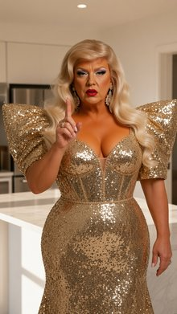
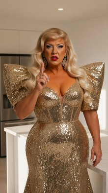
Front-Left Quarter View Medium Shot. The middle-aged south asian man from <IMAGE_1> and the blue-haired blonde woman from <IMAGE_2> are standing at the laminate kitchenette counter along the east wall from <IMAGE_0>. The middle-aged south asian man from <IMAGE_1> stands in the midground center, his torso angled toward the blue-haired blonde woman from <IMAGE_2>, looking at her as he holds the square white cardboard takeout container from <IMAGE_2> with its lid ajar on the counter surface. The blue-haired blonde woman from <IMAGE_2> stands opposite him, looking back at him with her arms crossed over her chest. The laminate kitchenette counter, cabinets, and a portion of the north wall from <IMAGE_0> are visible, with the south wall remaining off-frame. Late afternoon daylight streams in from an unseen east window at 5000K color temperature, augmented by warm interior ceiling recessed fixtures operating at 3000K. IMAX photorealistic film still. Shot on ARRI Alexa 65 with IMAX 70mm film quality. Subject rendered with extreme crystal clarity, every detail hyper-defined and sharp. Photorealistic, high-fidelity texture. Ultra-sharp focus on subject, high micro-detail rendering. Freckles/skin pores visible, accurate skin texture, realistic fabric simulation. Massive dynamic range capture, deep shadows and bright highlights. Cinematic color science. Clean precise commercial color grade.
{"rewrite": "A front-left quarter view medium shot set within the modern living room and kitchenette from <IMAGE_0>. The scene focuses on the laminate kitchenette counter, cabinets, and a portion of the north wall, with the south wall remaining off-frame. Standing at the counter in the midground center is the middle-aged South Asian man from <IMAGE_1>, wearing his bright green high-visibility jacket with reflective stripes over a teal polo shirt and dark grey pants. His torso is angled toward the woman, and he is looking directly at her while holding a square white cardboard takeout container with its lid ajar, resting it on the counter surface. Standing opposite him is the young blonde woman with blue ombre hair from <IMAGE_2>, wearing her pink strapless button-up tube top and white cargo pants. She has her arms crossed over her chest and is looking back at the man. The lighting is a cinematic blend of late afternoon daylight streaming in from an unseen east window at a 5000K color temperature, mixing with warm interior ceiling recessed fixtures operating at 3000K. The image is rendered as an IMAX photorealistic film still, shot on an ARRI Alexa 65 with IMAX 70mm film quality. It features extreme crystal clarity, ultra-sharp focus on the subjects, and high micro-detail rendering that reveals accurate skin textures, freckles, and pores. The clothing features realistic fabric simulation, and the scene boasts a massive dynamic range with deep shadows, bright highlights, cinematic color science, and a clean, precise commercial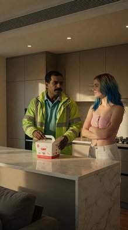
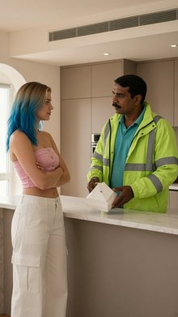
Right Close Up of the brown-haired woman from <IMAGE_1> sitting on the kitchen counter from <IMAGE_0>. Her torso is angled slightly, and she looks screen-left with a wide-eyed, awestruck, and stunned starstruck facial expression towards the off-frame blonde woman from <IMAGE_2>. Her brown hair falls around her face. Her appearance, face, and skimpy, low-cut black satin slip dress with thin spaghetti straps are preserved exactly as seen in <IMAGE_1>. The background shows a close-up portion of the kitchen from <IMAGE_0> with the white marble surface. Warm afternoon light streams across the scene, highlighting her stunned expression with high-gloss bloom. Captured in an IMAX photorealistic film still, shot on ARRI Alexa 65 with IMAX 70mm film quality, extreme crystal clarity, ultra-sharp focus, realistic skin and fabric texture, massive dynamic range, clean precise commercial color grade.
A close-up, photorealistic IMAX film still featuring the young woman with long wavy brown hair from <IMAGE_1>, now sitting on the white marble kitchen island seen in <IMAGE_0>. Her torso is angled slightly, and she is looking towards the left side of the screen with a wide-eyed, awestruck, and stunned starstruck facial expression, reacting to the off-frame presence of the blonde woman from <IMAGE_2>. Her appearance, face, and her skimpy, low-cut black satin slip dress with thin spaghetti straps are preserved exactly as seen in <IMAGE_1>, with her brown hair falling naturally around her face as she turns. The background displays a close-up portion of the modern kitchen from <IMAGE_0>, focusing on the white marble surface with grey veining. Warm afternoon sunlight streams across the scene, casting geometric shadows and highlighting her stunned expression with a high-gloss bloom effect. The image is captured with the visual characteristics of an ARRI Alexa 65 with IMAX 70mm film quality, featuring extreme crystal clarity, ultra-sharp focus on the woman, realistic skin and satin fabric textures, massive dynamic range, and a clean, precise commercial color grade.

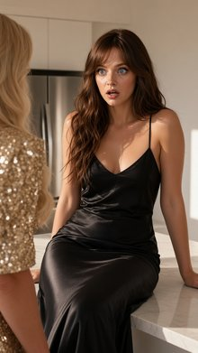
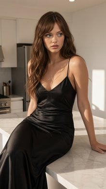
Right Close Up of the brown-haired woman from <IMAGE_1> sitting on the kitchen counter from <IMAGE_0>. The brown-haired woman from <IMAGE_1> is positioned frame-left on the white marble kitchen island, with her torso angled slightly screen-right. She is looking screen-right with a mocking smirk, her expression malicious and amused. Her long brown hair catches the bright afternoon light. She wears the skimpy, low-cut black satin slip dress with thin spaghetti straps from <IMAGE_1>, maintaining her exact appearance and wardrobe. The background is a soft, shallow depth-of-field blur of the sunny beach kitchen from <IMAGE_0>, highlighting the white surfaces and stainless steel refrigerator. Warm, bright afternoon sunlight streams in from the side, creating high-gloss highlights and casting a soft glow on her face and hair. The image style is an IMAX photorealistic film still. Shot on ARRI Alexa 65 with IMAX 70mm film quality. Subject rendered with extreme crystal clarity, every detail hyper-defined and sharp. Photorealistic, high-fidelity texture. Ultra-sharp focus on subject, high micro-detail rendering. Freckles/skin pores visible, accurate skin texture, realistic fabric simulation. Massive dynamic range capture, deep shadows and bright highlights. Cinematic color science. Clean precise commercial color grade.
A right close-up shot of the brown-haired woman from <IMAGE_1>, now sitting on the white marble kitchen island from <IMAGE_0>. The woman is positioned frame-left, with her torso angled slightly screen-right, looking screen-right with a malicious, amused, mocking smirk. She retains her exact appearance and wardrobe from <IMAGE_1>, wearing the same skimpy, low-cut black satin slip dress with thin spaghetti straps. Her long wavy brown hair catches the bright afternoon light, and her face is rendered with extreme crystal clarity, showing hyper-defined details like freckles, skin pores, and accurate skin texture. The background is a soft, shallow depth-of-field blur of the sunny kitchen from <IMAGE_0>, highlighting the out-of-focus white surfaces, stainless steel refrigerator, and the doorway leading to the living room. Warm, bright afternoon sunlight streams in from the side, creating high-gloss highlights and a soft glow on her face and hair, while casting deep shadows. The image is styled as an IMAX photorealistic film still, shot on ARRI Alexa 65 with IMAX 70mm film quality. It features ultra-sharp focus on the subject, high micro-detail rendering, realistic fabric simulation of the satin dress, massive dynamic range capture, cinematic color science, and a clean, precise commercial color grade.

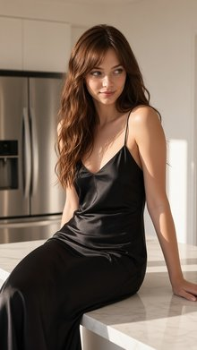
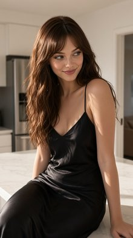
A cinematic-modern Two Shot of the man in the green polo from <IMAGE_1> and the woman in the black slip dress from <IMAGE_2> sitting on the white marble kitchen counter in the midground, set within the kitchen of <IMAGE_0>. To the screen-left, a crushed Uber Eats paper bag lies flattened on the counter surface, heavily crumpled and torn with dark grease stains seeping through. The man in the green polo from <IMAGE_1> is positioned on the counter, looking down at the crushed bag with a dejected expression, his body angled toward screen-left. Next to him, the woman in the black slip dress from <IMAGE_2> sits on the counter, looking toward the camera with a subtle smirk on her face. Her identity, facial features, and her skimpy, low-cut black satin slip dress with thin spaghetti straps are preserved from <IMAGE_2>. The man's identity, dark hair, mustache, and wrinkled, bright green polo shirt are preserved from <IMAGE_1>. The bright, high-gloss white marble kitchen island and background elements of <IMAGE_0> are visible. Warm, bright afternoon sunlight streams in, illuminating the scene and highlighting the messy setup on the counter. Shot on ARRI Alexa 65 with IMAX 70mm film quality, subject rendered with extreme crystal clarity, hyper-defined details, and a clean commercial color grade.
A cinematic two-shot set within the bright, modern kitchen from <IMAGE_0>. In the midground, sitting on the high-gloss white marble kitchen island, are the man from <IMAGE_1> and the woman from <IMAGE_2>. To the screen-left on the marble surface rests a heavily crumpled, torn, and flattened paper delivery bag with dark grease stains seeping through the paper. The bag features the text "Uber Eats" printed on its visible side in a large, bold green sans-serif font, with "Uber" on the top line and "Eats" directly below it in black. The man from <IMAGE_1>, retaining his dark hair, prominent mustache, wrinkled bright green polo shirt, khaki cargo pants, and brown sandals, sits on the counter with his body angled toward the screen-left. He is looking down at the crushed bag with a dejected, disappointed expression, his brow furrowed. Next to him sits the woman from <IMAGE_2>, maintaining her long wavy brown hair, blue eyes, and her low-cut black satin slip dress with thin spaghetti straps. She is looking directly toward the camera with a subtle, mischievous smirk. The background retains the white cabinetry, stainless steel refrigerator, stove, and the doorway leading to the living room from <IMAGE_0>. Warm, bright afternoon sunlight streams into the room, casting strong, geometric shadows across the marble island and illuminating the subjects and the messy bag. The image is rendered with the extreme crystal clarity, hyper-defined details, and clean commercial color grade characteristic of an ARRI Alexa 65 shot on IMAX 70mm film.

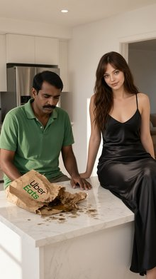
A Two Shot, Medium Close Up photograph. Brock bro from <IMAGE_1>, the green bumpy muscular anthropomorphic broccoli, is on the frame-left, sitting on the edge of the plush white daybed from <IMAGE_0>. Tomatina from <IMAGE_2>, the glossy red smooth anthropomorphic tomato woman, is on the frame-right, reclining on the same daybed, facing Brock bro. The daybed sits between them. Brock bro holds a single, translucent green grape, prop_grape, with his hand, feeding it directly toward Tomatina's mouth as she opens it slightly to receive the grape. Brock bro wears a white tropical flower lei exactly as seen in <IMAGE_1>, and Tomatina wears her gold hoop earrings from <IMAGE_2>. The background features the sheer white linen curtains draped from the corner posts of the luxury open-air cabana from <IMAGE_0>. Warm, golden hour sunlight filters through the sheer curtains, casting a soft, romantic glow over the characters and the scene. The image is rendered as a 4K lifestyle vlog photograph with a soft even frontal glow on the subjects, extremely smooth processed skin, zero grain, and a warm punchy color grade with boosted saturation.
A medium close-up, two-shot lifestyle vlog photograph set inside the luxury open-air wooden cabana from <IMAGE_0>. On the left side of the frame, the green, bumpy, muscular anthropomorphic broccoli character from <IMAGE_1> is sitting on the edge of the plush white daybed. He retains his black sunglasses, gold chain, tropical floral shirt, and white flower lei from <IMAGE_1>. He is holding a single, translucent green grape in his hand, gently feeding it toward the right. On the right side of the frame, the glossy red, smooth anthropomorphic tomato woman from <IMAGE_2> is reclining on the same white daybed, facing the broccoli character. She retains her woven floral bikini and gold hoop earrings from <IMAGE_2>. Her mouth is slightly open, ready to receive the grape. The background features the sheer white linen curtains draped from the dark wooden corner posts of the cabana seen in <IMAGE_0>. Warm, golden hour sunlight filters through the sheer curtains, casting a soft, romantic glow over the characters and the scene. The image features a soft, even frontal glow on the subjects, extremely smooth processed textures, zero grain, and a warm, punchy color grade with highly boosted saturation.

A Two Shot. The green broccoli man from <IMAGE_1> and the tomato woman from <IMAGE_2> are situated on the pool deck from <IMAGE_0>. The green broccoli man from <IMAGE_1> is standing midground screen-left, facing screen-right. His head is turned slightly to look at the tomato woman from <IMAGE_2>. He is a muscular green bumpy broccoli figure wearing a white tropical flower lei exactly as in <IMAGE_1>. Seated on the wooden sun lounger in the midground screen-right is the tomato woman from <IMAGE_2>, a glossy red smooth anthropomorphic tomato woman wearing gold hoop earrings. She is looking back screen-left towards him with a neutral expression. Both are shown with their physical appearances and wardrobes preserved from their respective reference images. The background features the white stucco villa wall, tiled pool deck, and brilliant blue swimming pool from <IMAGE_0>. The scene is illuminated by bright, direct afternoon sunlight casting sharp shadows on the tiled floor. 4K lifestyle vlog photograph. Soft even frontal glow on subject. Extremely smooth processed skin, zero grain. Warm punchy color grade, boosted saturation. Skin computationally smoothed, pores minimized, beauty-processed texture.
A vibrant, highly processed 4K lifestyle vlog photograph set on the sunlit pool deck from <IMAGE_0>. The scene features the beige tiled patio, the brilliant blue swimming pool in the foreground, and the white stucco villa wall with its dark doorway and palm frond shadows in the background. In the midground on the left, the muscular green broccoli man from <IMAGE_1> is standing on the tiles, his body facing screen-right but his head turned slightly to look left. He retains his exact appearance from <IMAGE_1>, including the bumpy green broccoli head, black sunglasses, thick gold chain, white floral lei, and the open white Hawaiian shirt with green palm leaves and orange flowers. On the right side of the midground, the glossy red tomato woman from <IMAGE_2> is seated on the left wooden sun lounger from <IMAGE_0>. She is looking back screen-left towards the broccoli man with a neutral expression. She retains her exact appearance from <IMAGE_2>, including her smooth glossy red tomato head with a green leafy top, gold hoop earrings, gold anklet, and her woven two-piece bikini adorned with tiny flowers and vines. The scene is illuminated by bright, direct afternoon sunlight casting sharp, distinct shadows on the tiled floor from the characters and the palm fronds. The image features a warm, punchy color grade with boosted saturation, a soft even frontal glow on the subjects, and an extremely smooth, beauty-processed texture with zero grain.

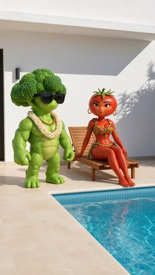
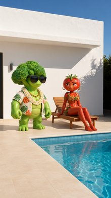
Tight Close Up shot of the fair-skinned blond man from <IMAGE_1>. The fair-skinned blond man from <IMAGE_1> is framed tightly in the center of the image, with his face occupying most of the frame. He has his eyes wide with excitement, looking screen-right towards the off-frame bouncer guy from <IMAGE_2>. He is shown exactly as he appears in <IMAGE_1>, wearing a thin black leather choker holding a small silver hoop. The background shows a portion of the brick wall from <IMAGE_0>. Vibrant, saturated neon pink and blue highlights from the overhead signs cast strong colored glows across his face. Changing the image style to an IMAX photorealistic film still, shot on ARRI Alexa 65 with IMAX 70mm film quality. Subject rendered with extreme crystal clarity, every detail hyper-defined and sharp, photorealistic, high-fidelity texture, ultra-sharp focus on subject, high micro-detail rendering with visible skin pores, accurate skin texture, massive dynamic range capture with deep shadows and bright highlights, cinematic color science, clean precise commercial color grade.
A tight close-up shot focusing on the face of the fair-skinned blond man from <IMAGE_1>, framed so that his face occupies most of the composition. He retains his exact appearance from <IMAGE_1>, including his short blond hair and the thin black leather choker with a small silver hoop around his neck. His expression is transformed into one of intense excitement, with his eyes wide open, looking sharply screen-right as if reacting to the off-frame bouncer from <IMAGE_2>. The background consists of the dark, textured brick wall from <IMAGE_0>, slightly out of focus to emphasize the subject. The scene is illuminated by the same vibrant, saturated neon pink and blue lights from the overhead sign in <IMAGE_0>, casting strong, dramatic pink and blue colored glows across the man's face, highlighting his features and creating deep shadows. The image is rendered in the style of an IMAX photorealistic film still, simulating a shot on an ARRI Alexa 65 with IMAX 70mm film quality. The subject is captured with extreme crystal clarity and ultra-sharp focus, showcasing high-fidelity textures, visible skin pores, and accurate skin details. The lighting features a massive dynamic range with deep, rich shadows and bright, glowing highlights, finished with a clean, precise commercial color grade and cinematic color science.

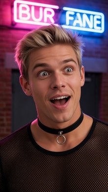
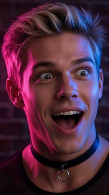
Front Close Up on the scene in the high-security vault from <IMAGE_0>. In the foreground, the hands of the blonde man from <IMAGE_1> are bound by the heavy-duty steel handcuffs. The cold, metallic steel of the handcuffs is clamped tightly around his wrists, reflecting the flashing red emergency light. In the background, the blonde man is visible with an exaggerated, pouty frown on his face, his appearance and tight black crop-top shirt with neon pink trim preserved from <IMAGE_1>. The stone walls of the vault from <IMAGE_0> are visible in the background, bathed in intense flashing crimson emergency alarm lights. The lighting is high-intensity flashing crimson, casting dramatic red highlights on the metal handcuffs and the man's face. IMAX photorealistic film still. Shot on ARRI Alexa 65 with IMAX 70mm film quality. Subject rendered with extreme crystal clarity, every detail hyper-defined and sharp. Photorealistic, high-fidelity texture. Ultra-sharp focus on subject, high micro-detail rendering, accurate skin texture.
A cinematic, extreme close-up shot set within the high-security stone vault from <IMAGE_0>. In the immediate foreground, the hands of the blonde man from <IMAGE_1> are prominently featured, tightly bound by heavy-duty steel handcuffs. The cold, thick metallic steel of the cuffs is clamped securely around his wrists, gleaming with sharp, bright reflections from the ambient light. The camera maintains an ultra-sharp focus on the handcuffs and his hands, capturing hyper-defined skin textures, pores, and the rugged metallic grain of the restraints. In the mid-background, the blonde man from <IMAGE_1> is visible, retaining his athletic build and the exact tight black crop-top shirt with neon pink trim. However, his previously smiling face now bears an exaggerated, comical pouty frown with pushed-out lips and furrowed brows. The environment retains the rough-hewn stone block walls and the central black pedestal with the glowing red gem under a glass dome from <IMAGE_0>. The entire scene is bathed in intense, high-intensity flashing crimson emergency alarm lights, casting dramatic, deep red highlights and stark shadows across the metallic handcuffs, the man's face, and the stone textures. The image is rendered as a photorealistic IMAX film still, shot on an ARRI Alexa 65 with IMAX 70mm film quality, featuring high-fidelity textures, a shallow depth of field that subtly blurs the background, and dramatic, moody lighting.
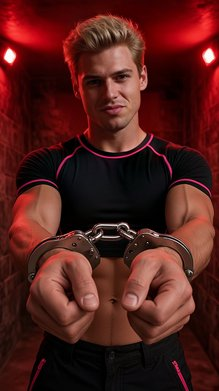
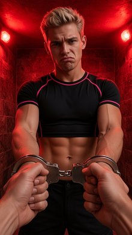
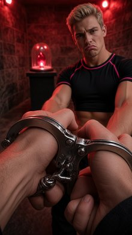
Back Medium Shot. From behind Blake, the fair-skinned blond man in a sheer black mesh crop top and reflective metallic silver skinny pants from <IMAGE_1>, who is centered in the foreground facing away from the camera. In the midground, Leo, the brown-haired, bearded man in a dark charcoal denim shirt from <IMAGE_2>, is standing behind the mahogany counter facing toward Blake. The scene is situated at the north end of the door side of the bar looking south down the counter from <IMAGE_0>. The deep purple LED lights under the counter lip glow vibrantly, casting deep violet light onto the characters and the counter. Style of an IMAX photorealistic film still, shot on ARRI Alexa 65 with IMAX 70mm film quality, extreme crystal clarity, hyper-defined details, realistic fabric simulation, clean precise commercial color grade.
A cinematic, photorealistic back medium shot set within the moody, purple-lit bar environment from <IMAGE_0>. The camera is positioned at the north end of the door side, looking south down the length of the mahogany bar counter. In the foreground, standing with his back to the camera, is the fair-skinned blond man from <IMAGE_1>. He is wearing the same outfit: a sheer black mesh crop top that reveals his back, a black choker, reflective metallic silver skinny pants, and silver sneakers. Centered in the foreground, he faces the counter. In the midground, standing behind the bar counter and facing toward the blond man, is the brown-haired, bearded man from <IMAGE_2>. He is dressed in the same dark charcoal denim shirt with chest pockets and rolled-up sleeves, along with the matching charcoal apron featuring metal rivets. The deep purple LED lights under the counter lip from <IMAGE_0> glow vibrantly, casting deep violet light onto the characters and the wooden counter, highlighting the realistic fabric simulation of the mesh top, the metallic sheen of the pants, and the rugged texture of the denim. The background retains the illuminated liquor shelves, stainless steel fridge, and dark wood floor. The image is styled as an IMAX photorealistic film still, shot on ARRI Alexa 65 with IMAX 70mm film quality, featuring extreme crystal clarity, hyper-defined details, and a clean, precise commercial color grade.

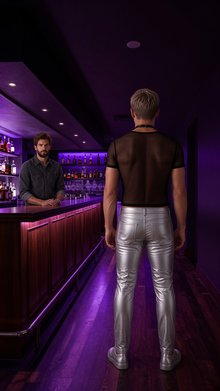
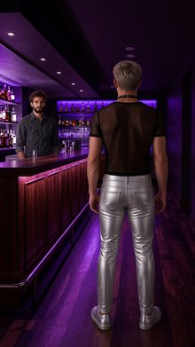
Front Medium Shot. The muscular white anthropomorphic rabbit from <IMAGE_1> is standing screen-left in the midground of the alleyway from <IMAGE_0>, his body angled forward. He is holding a polished, chrome-plated semi-automatic pistol with custom ivory grip plates, as described in prop_mafia_pistol, outstretched with both hands. His appearance, white fur, and torn pinstripe mobster vest with a gold pocket watch chain are preserved from <IMAGE_1>. The brick wall from the alleyway of <IMAGE_0> is visible behind him. The scene is illuminated by harsh, cool-blue side-lighting casting deep shadows. Changed to an IMAX photorealistic film still. Shot on ARRI Alexa 65 with IMAX 70mm film quality. Subject rendered with extreme crystal clarity, every detail hyper-defined and sharp. Photorealistic, high-fidelity texture. Ultra-sharp focus on subject, high micro-detail rendering. Realistic fabric simulation. Massive dynamic range capture, deep shadows and bright highlights. Cinematic color science. Clean precise commercial color grade.
A front medium shot set within the dark, wet alleyway from <IMAGE_0>. Standing in the midground on the screen-left side is the muscular anthropomorphic white rabbit character from <IMAGE_1>. His body is angled forward, and he is holding a polished, chrome-plated semi-automatic pistol with custom ivory grip plates, outstretched with both hands in a ready stance. The character retains his exact appearance from <IMAGE_1>, including the tall rabbit ears, the intense human-like face with a smirk, the thick white fur, and the torn dark pinstripe mobster vest featuring the gold pocket watch and chain. The environment perfectly matches the moody atmosphere of <IMAGE_0>, featuring the wet, highly reflective pavement, the green graffiti-covered dumpster on the left, and the towering brick walls illuminated by harsh, cool-blue streetlights. The scene is styled as an IMAX photorealistic film still, shot on an ARRI Alexa 65 with IMAX 70mm film quality. The lighting features harsh, cool-blue side-lighting that casts deep, dramatic shadows across the rabbit's muscular physique and the torn fabric of his suit. The image boasts extreme crystal clarity, with ultra-sharp focus on the subject, high micro-detail rendering, and realistic fabric simulation. The massive dynamic range captures the bright highlights on the wet ground and the gleaming chrome of the pistol, finished with a clean, precise commercial color grade and cinematic color science.

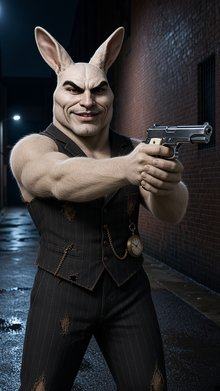
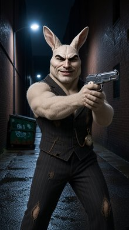
Over the shoulder shot looking over the shoulder of the blonde woman from <IMAGE_1> on the frame-right foreground, facing northwest towards the green anthropomorphic frog from <IMAGE_2> who is seated in the midground on STOOL_A at the north end of the rustic wooden table from <IMAGE_0>, facing south. The blonde woman is partially visible on the frame-right edge of the screen from behind, holding the modern slim smartphone from prop_smartphone in the foreground, pointing it toward him. The green anthropomorphic frog is framed in the midground, holding the small organic glowing violet mushroom from prop_glowing_shroom in his webbed hand. The setting is the mossy clearing from <IMAGE_0> with giant neon-pink mushrooms and neon-blue vines wrapping around gnarled trees in the background. Whimsical dappled golden sunlight filters down from the canopy, highlighting the frog's green skin, while the glowing mushrooms emit a soft bioluminescent light. Changed to an IMAX photorealistic film still, shot on ARRI Alexa 65 with IMAX 70mm film quality, extreme crystal clarity, hyper-defined details, cinematic color science.
An over-the-shoulder shot captured in the style of an IMAX photorealistic film still, utilizing the magical mossy forest clearing from <IMAGE_0> as the setting. In the right foreground, the blonde woman from <IMAGE_1> is partially visible from behind, positioned on the frame-right edge. Her long wavy blonde hair cascades down her back, and she is wearing the light blue sleeveless dress with the white lace collar. She is holding a sleek, modern slim smartphone in her hands, pointing its camera toward the midground to take a picture. In the midground, seated on the left wooden stool at the north end of the rustic wooden picnic table from <IMAGE_0>, is the green anthropomorphic frog from <IMAGE_2>. The frog is facing south towards the woman, retaining his Rasta beanie, red oval sunglasses, white t-shirt, and gold chain. In his webbed hand, he is holding a small, organic, glowing violet mushroom that casts a soft bioluminescent light on his textured green skin. The background perfectly preserves the enchanting atmosphere of <IMAGE_0>, featuring the giant neon-pink mushrooms, neon-blue vines wrapping around gnarled trees, and the moss-covered ground. Whimsical dappled golden sunlight filters down from the forest canopy, blending beautifully with the bioluminescent glow of the mushrooms. The image features extreme crystal clarity, hyper-defined details, and cinematic color science, simulating a shot on an ARRI Alexa 65 with IMAX 70mm film quality.

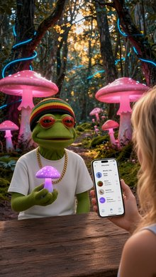
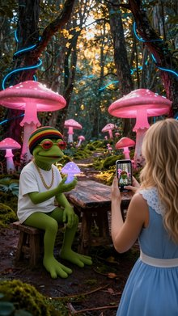
Front Wide Shot of the mossy clearing from <IMAGE_0>. The fair-skinned blonde woman from <IMAGE_1> is seated on STOOL_B on the screen-right side of the rustic wooden table, her body angled slightly toward the center, with her head tilted upward as she looks frame-left, basking in the warm golden sunlight. The green anthropomorphic frog from <IMAGE_2> sits peacefully on STOOL_A on the screen-left side of the rustic wooden table, with his body facing forward in a calm, relaxed posture. The glowing giant neon-pink mushrooms and blue vines from <IMAGE_0> frame them inside the beautiful, breathing magical forest. The lighting consists of dappled, whimsical golden sunlight filtering down from the canopy above, casting warm, shifting patterns of light and dark across the clearing, combined with a vibrant bioluminescent glow from the neon-pink mushrooms and neon-blue vines. Change the image style to an IMAX photorealistic film still. Shot on ARRI Alexa 65 with IMAX 70mm film quality. Subject rendered with extreme crystal clarity, every detail hyper-defined and sharp. Photorealistic, high-fidelity texture. Ultra-sharp focus on subject, high micro-detail rendering. Freckles/skin pores visible, accurate skin texture, realistic fabric simulation. Massive dynamic range capture, deep shadows and bright highlights. Cinematic color science. Clean precise commercial color grade.
A front wide shot of the magical mossy forest clearing from <IMAGE_0>, featuring the rustic wooden picnic table and stools in the foreground. Seated on the right-side wooden stool is the fair-skinned blonde woman from <IMAGE_1>, wearing her light blue sleeveless dress with a white lace collar and white waistband. Her body is angled slightly toward the center of the table, and her head is tilted upward as she looks toward the left side of the frame, basking in the warm golden sunlight. Her skin is rendered with extreme crystal clarity, revealing hyper-defined details like freckles and visible skin pores, while her dress shows realistic fabric simulation. On the left-side wooden stool sits the green anthropomorphic frog character from <IMAGE_2>, wearing his red, yellow, and green striped rasta beanie, red oval sunglasses, white t-shirt, and thick gold chain. He sits peacefully facing forward in a calm, relaxed posture, with his fuzzy green texture highly detailed and sharp. The scene is framed by the giant glowing neon-pink mushrooms and twisting neon-blue vines from <IMAGE_0>. The lighting combines dappled, whimsical golden sunlight filtering down from the canopy above, casting warm, shifting patterns of light and dark across the clearing, with a vibrant bioluminescent pink and blue glow emanating from the mushrooms and vines. The image is styled as an IMAX photorealistic film still, shot on an ARRI Alexa 65 with IMAX 70mm film quality. It features a massive dynamic range with deep shadows and bright highlights, cinematic color science, and a clean, precise commercial color grade, maintaining ultra-sharp focus and high micro-detail rendering on the subjects against the beautiful, breathing magical forest background.

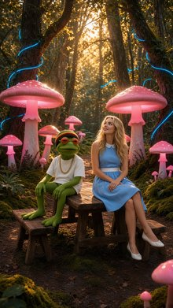
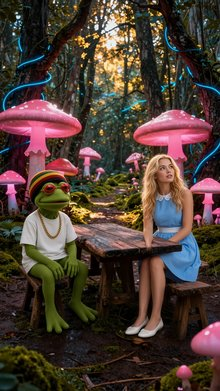
A Front Close Up shot of the young brown-haired girl from <IMAGE_1> standing screen-center in the foreground of the courtyard from <IMAGE_0>. Her head is turned toward screen-left, looking near the dark iron bars of the gate from the background. She preserves her physical identity, facial features, hair, and wardrobe from <IMAGE_1>, including her simple, bright yellow cotton t-shirt with a cartoon floral print. She is positioned close to the camera, with the heavy stone pillar and dark iron gate visible behind her. The nighttime scene is illuminated by warm yellow light spilling from the home's windows, casting long shadows across the dark stone pavement, with the street outside remaining dimly lit. Shot on ARRI Alexa 65 with IMAX 70mm film quality. Subject rendered with extreme crystal clarity, every detail hyper-defined and sharp. Photorealistic, high-fidelity texture with ultra-sharp focus. Massive dynamic range capture, deep shadows and bright highlights with clean, precise commercial color grade.
A front close-up shot of the young girl from <IMAGE_1>, now standing screen-center in the foreground of the nighttime courtyard from <IMAGE_0>. Her head is turned toward screen-left, her gaze directed near the dark iron bars of the gate in the background. She retains her exact physical identity, facial features, dark hair, and wardrobe from <IMAGE_1>, including her bright yellow cotton t-shirt with the cartoon floral print and blue denim shorts. She is positioned close to the camera, with the heavy, weathered stone pillar and the dark iron gate from <IMAGE_0> prominently visible behind her. The scene is illuminated by the warm, glowing yellow light spilling from the house's windows, casting long, distinct shadows across the dark stone pavement in the foreground, while the street outside the gate remains dimly lit. The image is rendered with the cinematic quality of an ARRI Alexa 65 with IMAX 70mm film, featuring extreme crystal clarity, hyper-defined details, and ultra-sharp focus on the subject. The photorealistic, high-fidelity texture captures a massive dynamic range with deep shadows, bright highlights, and a clean, precise commercial color grade.

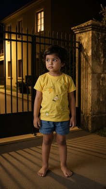
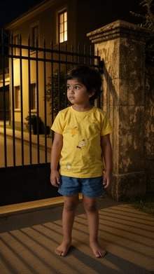
Front Medium Shot. The plastic doll from <IMAGE_1> stands upright inside the cardboard display box from <IMAGE_0>, centered in the midground with her torso facing directly forward. Her physical appearance and neon pink wardrobe are preserved exactly as seen in <IMAGE_1>. Both of her plastic palms are pressed flat against the transparent front window panel of the box, with her body positioned directly behind the clear plastic. She looks forward toward the camera with a neutral expression. Inside the display box, the miniature cigarette prop, a five-centimeter rigid white plastic cylinder with a gold foil band, rests inside the small molded plastic slot at the bottom corner of the floor. The background consists of the solid glossy matte pink interior walls of the box. The scene is illuminated by two high-intensity overhead white spotlights casting harsh downward light and sharp shadows inside the box.
A front medium shot capturing the plastic doll from <IMAGE_1> standing upright inside the white display box from <IMAGE_0>. The composition focuses on the doll from the top of her head down to her mid-thigh, centering her in the midground with her torso facing directly forward. The doll's physical appearance and neon pink wardrobe are preserved exactly as seen in <IMAGE_1>, including her voluminous blonde pigtails with pink fluffy ends, pink butterfly headband, pink dress with silver lapels, studded belt, and pink thigh-high boots. Both of her plastic palms are pressed flat against the transparent front window panel of the box, with her body positioned directly behind the clear plastic. She looks forward toward the camera with a neutral expression. Inside the display box, resting inside the small molded plastic slot at the bottom right corner of the white floor frame, is a miniature cigarette prop: a five-centimeter rigid white plastic cylinder with a gold foil band. The background behind the doll consists of the solid glossy matte pink interior walls of the box. The scene is illuminated by the two high-intensity overhead white spotlights from <IMAGE_0>, casting harsh downward light, subtle reflections on the clear plastic, and sharp shadows from the doll and the cigarette prop onto the pink floor and walls. The outer white frame of the box remains visible against the smooth, neutral grey studio background.
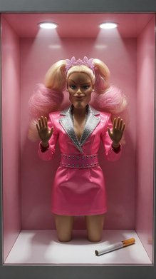
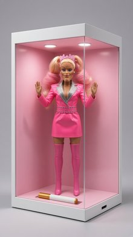
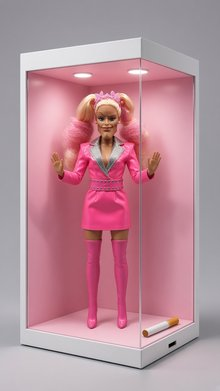
Front Medium Shot. A mature blonde woman from <IMAGE_1> is standing directly behind the center wooden speaker podium from <IMAGE_0> on the stage. Her torso is facing the camera directly, and she is centered in the midground, with her hands resting lightly on the top edges of the podium. Her face has a confident, neutral expression, looking directly forward at the camera. Her appearance, blonde hair, and tailored scarlet red double-breasted suit jacket with gold buttons, white shirt, and red tie are preserved exactly as in <IMAGE_1>. The wooden speaker podium stands in the midground center, with wooden stage flooring beneath it and dark wood-paneled walls in the background, exactly as seen in <IMAGE_0>. Bright white overhead stage spotlights illuminate the podium area against a dim background, creating a formal press conference atmosphere.
A front medium shot combining the subjects and environments of <IMAGE_0> and <IMAGE_1>. The mature blonde woman from <IMAGE_1> is now standing directly behind the center wooden speaker podium on the stage from <IMAGE_0>. Her appearance is preserved exactly as in <IMAGE_1>, featuring her long, wavy blonde hair, confident neutral expression looking directly forward at the camera, and her tailored scarlet red double-breasted suit jacket with gold buttons, white collared shirt, and red tie. Her torso faces the camera directly, and she is centered in the midground with her hands resting lightly on the top edges of the podium. The setting retains the exact layout of <IMAGE_0>, including the light wooden stage flooring beneath the podium, the dark wood-paneled walls in the background, and the wooden aisle with dark auditorium seating visible in the foreground. Bright white overhead stage spotlights illuminate the woman and the podium area against the dim background, creating a formal press conference atmosphere.
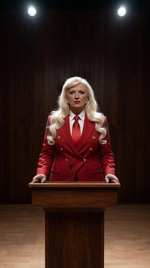
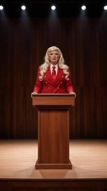
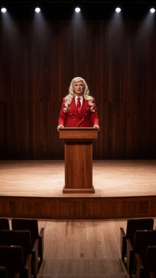
An eye-level Two Shot of the woman from <IMAGE_1> and the blue furry monster from <IMAGE_2> standing side-by-side inside the round silver metal trash can from <IMAGE_0> in the midground, with their upper bodies visible. The woman from <IMAGE_1>, with her tanned skin and brown hair, is wrapped in her white cotton bedsheet, looking forward at the camera with a neutral expression, preserving her exact face and wardrobe. The blue furry monster from <IMAGE_2> stands next to her, looking forward with wide-eyed excitement, preserving his blue furry body and distinct features. Only their torsos and heads are visible as they emerge from the trash can. The background shows the wet brick alley wall from <IMAGE_0>, with debris and boxes on the frame-right. Dim, cold midnight moonlight shines down from above, casting deep, high-contrast shadows across the brick walls and damp asphalt pavement. This is a cinematic-modern image style with an IMAX photorealistic film still look. Shot on ARRI Alexa 65 with IMAX 70mm film quality. Subjects are rendered with extreme crystal clarity, hyper-defined sharp details, realistic skin and fabric textures, massive dynamic range with deep shadows, and cinematic color grade.
A cinematic, eye-level two-shot set within the dark, wet brick alleyway from <IMAGE_0>. In the midground, the round silver metal trash can from <IMAGE_0> now contains two figures standing side-by-side, with only their upper bodies and heads visible as they emerge from the top. On the left is the woman from <IMAGE_1>, retaining her exact facial features, tanned skin, long wavy brown hair, and the white cotton bedsheet wrapped around her torso. She looks directly forward at the camera with a neutral expression. Standing immediately next to her on the right is the blue furry monster from <IMAGE_2>, preserving its thick blue fur, large wide eyes, toothy smile, and clawed hands. The monster looks forward with an expression of wide-eyed excitement. The background faithfully recreates the environment of <IMAGE_0>, featuring the tall, dark brick walls, the wet asphalt pavement reflecting the light, and the scattered cardboard boxes and debris on the right side of the frame. The scene is illuminated by the same dim, cold midnight moonlight shining down from the dark sky above, casting deep, high-contrast shadows across the brickwork and the damp ground. The image is rendered with an IMAX photorealistic film still aesthetic, simulating a shot on an ARRI Alexa 65 with IMAX 70mm film quality, featuring extreme crystal clarity, hyper-defined sharp details, realistic skin and fabric textures, massive dynamic range, and a moody cinematic color grade.

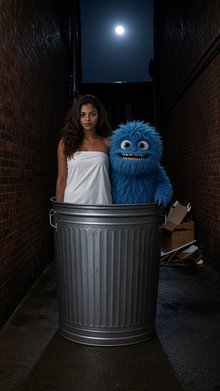
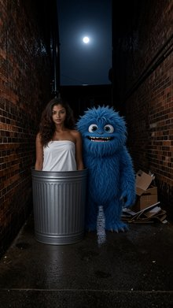
An IMAX photorealistic film still, Two Shot of the brown-haired woman from <IMAGE_1> and the small blue furry monster from <IMAGE_2> on the unmade bed in the bedroom from <IMAGE_0>. The brown-haired woman from <IMAGE_1>, wrapped tightly in her white cotton bedsheet, is sitting up on the screen-left side of the unmade bed, staring screen-right towards the small blue furry monster with an expression of absolute dread. On screen-right, the small blue furry monster from <IMAGE_2> is sitting on the bed, raising his blue furry arm and gesturing excitedly with a wide, laughing expression. The bed, headboard, and cluttered nightstand from <IMAGE_0> are visible in the frame. Morning light filters dimly through the closed window blinds, casting soft, warm dust-mote shadows across the characters and the unmade bed. Shot on ARRI Alexa 65 with IMAX 70mm film quality, extreme crystal clarity, deep shadows and bright highlights, and clean cinematic color grade.
An IMAX photorealistic film still featuring a two-shot composition set in the bedroom from <IMAGE_0>. On the screen-left side of the unmade wooden bed, the woman with long wavy brown hair and dark skin from <IMAGE_1> is sitting up. She is wrapped tightly in her white cotton bedsheet, clutching it closely to her chest, and is staring screen-right with a facial expression of absolute dread and fear. On the screen-right side of the bed sits the small blue furry monster from <IMAGE_2>. The monster is sitting on the rumpled white sheets, raising its blue furry arm and gesturing excitedly, its face showing a wide, laughing expression with its large eyes and toothy grin. The environment faithfully retains the details of <IMAGE_0>, including the wooden headboard, the unmade white bedding, and the wooden nightstand on the left cluttered with silver cans, bottles, and scattered jewelry. The lighting matches the original room, with morning light filtering dimly through the closed window blinds on the right, casting soft, warm striped shadows and illuminating floating dust motes across the characters and the bed. The image is rendered with extreme crystal clarity, deep shadows, bright highlights, and a clean cinematic color grade, simulating a shot on an ARRI Alexa 65 with IMAX 70mm film quality.

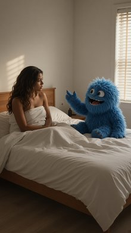
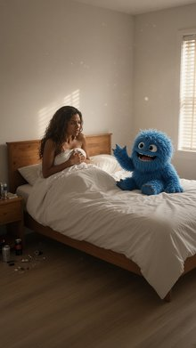
Front Medium Shot of the woman from <IMAGE_1> standing in front of the large flat-topped blue mushroom in the environment of <IMAGE_0>, framed from the static perspective of her phone propped on the mushroom edge. She is standing in the foreground, torso facing forward, looking directly into the camera with an excited, vlogging expression. She is holding the Wax-Sealed Black Invitation Card from the prop description, a matte black envelope with a silver wax seal, in both of her hands, displaying it towards the camera. Her identity, fair skin, blond hair, modern blue silk slip dress, and delicate silver necklace are preserved exactly as seen in <IMAGE_1>. The background shows the winding grey cobblestone path, giant pink carnivorous flowers, and wild purple ferns from <IMAGE_0> under a dreamy twilight sky with pastel lavender hues and a soft pink and orange glow from the flora. Shot in the style of an iPhone 16 Pro Max rear camera photograph with a 24mm main lens, featuring sharp focus, clean neutral tones, photorealistic detail, natural skin texture, and a soft, natural glow falling on the scene.
A photorealistic, front medium shot of the blonde woman from <IMAGE_1>, now standing in the whimsical forest environment of <IMAGE_0>. She is positioned in the foreground, directly in front of the large, flat-topped blue mushroom with white spots. The composition is framed from the static perspective of a phone propped on the edge of the mushroom, giving a slight low-angle view. The woman retains her exact identity, fair skin, wavy blonde hair, delicate silver necklace, and the blue silk slip dress from <IMAGE_1>. Her torso faces forward, and she looks directly into the camera with an excited, animated vlogging expression. In both hands, she holds up a matte black envelope featuring a prominent, shiny silver wax seal, displaying it clearly to the viewer. The background faithfully recreates the magical setting of <IMAGE_0>, including the winding grey cobblestone path, the giant glowing pink cactus-like creature with eyes, the vibrant purple ferns, and the distant ornate archway. The scene is illuminated by the dreamy twilight sky with pastel lavender hues, while a soft pink and orange glow from the surrounding flora casts warm, natural highlights on the woman and her dress. The image is rendered in the style of an iPhone 16 Pro Max rear camera photograph using a 24mm main lens, featuring sharp focus on the woman and the invitation, clean neutral tones, natural skin texture, and cinematic depth of field.

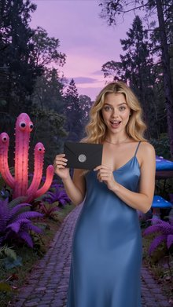
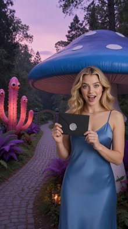
Front Medium Shot iPhone front camera selfie of the blond woman in a slip dress from <IMAGE_1> descending down toward the giant red velvet armchair from <IMAGE_0> in a mossy clearing. Her arm is extended forward and out of frame toward the bottom right, holding her phone to capture herself from a high-angle facing her face. Her blond hair is flying slightly from the descent, and her face shows an excited expression, maintaining her identity and appearance from <IMAGE_1>. Below her, the mossy clearing from <IMAGE_0> is visible, with the giant red velvet armchair in the midground and gnarled roots in the background. The scene is illuminated by dim, mystical subterranean blue bioluminescence with floating dust particles floating in shafts of soft white light. Photo-realism, High-fidelity texture with exact skin details, pores, and natural skin tone.
A photorealistic, high-angle iPhone front camera selfie capturing the blonde woman from <IMAGE_1> mid-air as she descends toward the mystical forest floor. She is wearing the same blue satin slip dress and delicate necklace, but her wavy blonde hair is now flying wildly around her face from the downward motion, and she wears an excited, wide-eyed, joyful smile. Her arm is extended forward and out of frame toward the bottom right, holding the phone to capture this dynamic high-angle shot facing her face. The camera perspective looks down past her, revealing the dark, mossy clearing from <IMAGE_0> directly below. The giant, tufted red velvet armchair sits prominently in the midground on the dirt path, surrounded by the massive, gnarled tree roots and hanging vines of the enchanted forest. The scene is illuminated by a blend of the original overhead shaft of soft white light and a newly added dim, mystical subterranean blue bioluminescence emanating from the surrounding moss and roots. Glowing dust particles float magically within the light shafts. The image features high-fidelity textures, capturing exact skin details, pores, natural skin tones, the realistic sheen of her satin dress, and the rich velvet of the armchair.

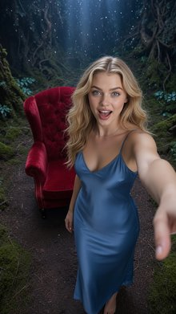
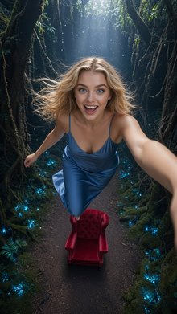
Front Medium Shot of the elderly wizard from <IMAGE_1> in the center of the frame as the blue magical barrier fades away. The elderly wizard from <IMAGE_1> is standing behind the circular stone table from <IMAGE_0> in the center of the frame, looking directly forward at the camera with a weary, soot-smudged face, his body positioned frontally. Wisps of black smoke and grey ash drift lazily around his head, and small glowing embers float in the air. His identity, gray hair and beard, and classic blue wizard robes and pointed hat are preserved exactly as in <IMAGE_1>. The circular stone table dominates the midground, with volcanic glass cavern walls rising into the background. The ambient light is dim and moody, lit primarily by low-frequency orange lava flows trickling down the volcanic walls in the far background and glowing embers floating in the air. Change the image style to an IMAX photorealistic film still. Shot on ARRI Alexa 65 with IMAX 70mm film quality. Subject rendered with extreme crystal clarity, every detail hyper-defined and sharp. Photorealistic, high-fidelity texture. Ultra-sharp focus on subject, high micro-detail rendering. Freckles/skin pores visible, accurate skin texture, realistic fabric simulation. Massive dynamic range capture, deep shadows and bright highlights. Cinematic color science. Clean precise commercial color grade.
A front medium shot of the elderly wizard from <IMAGE_1>, now positioned centrally behind the circular stone table from <IMAGE_0>. The wizard retains his exact identity, long gray hair, thick beard, and the intricate dark blue robes with gold embroidery, brown leather belt, and pointed hat from <IMAGE_1>. However, his face is now visibly weary and heavily smudged with dark soot, featuring hyper-defined skin textures, visible pores, and freckles. He stands frontally, looking directly at the camera. A translucent, ethereal blue magical barrier is actively fading away and dissipating in the air around him. Wisps of black smoke, grey ash, and small glowing orange embers drift lazily around his head and shoulders. The setting is the dark volcanic cavern from <IMAGE_0>, with the circular stone table and its surrounding curved bench dominating the midground. The background features the jagged volcanic rock walls with glowing orange lava flows trickling down, casting a dim, moody, warm light. The entire scene is rendered as an IMAX photorealistic film still, shot on an ARRI Alexa 65 with IMAX 70mm film quality. The image boasts extreme crystal clarity, ultra-sharp focus on the subject, high micro-detail rendering, and realistic fabric simulation. The lighting features a massive dynamic range with deep cinematic shadows and bright highlights from the lava and embers, finished with a clean, precise commercial color grade and cinematic color science.

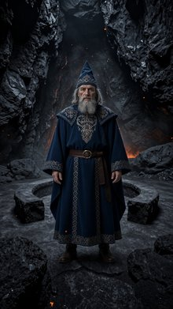
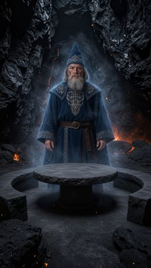
A cinematic-modern Front Wide Shot captures a dramatic confrontation over the circular stone table in the volcanic cavern from <IMAGE_0>. Frame-left, the elderly wizard in blue from <IMAGE_1> stands in a defensive stance, his body angled toward the right. On the right, the enormous horned demon from <IMAGE_2> has its jaws wide open, unleashing a massive wave of bright orange and white fire that erupts horizontally across the table towards the wizard. In the middle of the stone table sits the glowing chalice prop, enveloped in intense heat distortion. The cavern's background of jagged black volcanic glass is dimly lit by trickling orange lava flows, with glowing embers floating in the air. This IMAX photorealistic film still, shot on ARRI Alexa 65 with 70mm film quality, features extreme crystal clarity and high dynamic range, with brilliant highlights from the fire and deep basalt shadows.
A cinematic, front wide shot capturing a dramatic confrontation set within the dark volcanic cavern from <IMAGE_0>. The environment retains the jagged black volcanic rock walls, cracked stone floor, and trickling veins of orange lava, but is now intensely illuminated by a fierce magical battle. On the left side of the frame, the elderly wizard from <IMAGE_1> stands in a defensive stance, his body angled toward the right. He wears his identical tall blue pointed hat and long blue robe with intricate gold embroidery, brown leather belt, and boots, with his hands raised and angled to shield himself. On the right side, the massive, horned demon from <IMAGE_2> looms menacingly, its dark metallic armor, glowing lava-textured body, and spiked tail fully visible. The demon's jaws are wide open in a roar, unleashing a massive, horizontal wave of bright orange and blinding white fire that erupts directly across the circular stone table towards the wizard. In the exact center of the stone table sits a newly added, ornate glowing golden chalice, heavily enveloped in intense heat distortion ripples. The cavern air is thick with floating, glowing embers. The lighting is highly dynamic, with the brilliant highlights from the demon's fire casting deep, dramatic shadows across the basalt rocks. The image is rendered as an IMAX photorealistic film still, shot on an ARRI Alexa 65 with 70mm film quality, featuring extreme crystal clarity, high dynamic range, and a wide cinematic composition.
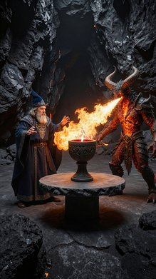
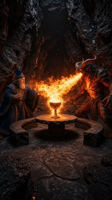
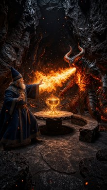
Front Wide Shot of the elderly wizard from <IMAGE_1> seated at the screen-left side of the circular stone table from <IMAGE_0>, looking screen-right and upward. Across the table, the colossal, fiery demon from <IMAGE_2> towers in the midground and background, its glowing magma chest radiating light. The six-foot-tall gnarled wooden wizard's staff rests against the wizard's seat, and the heavy stone chalice filled with glowing red liquid sits on the table's stone surface. The background reveals the vast underground cavern from <IMAGE_0> with walls of jagged black volcanic glass. The ambient light is dim and moody, lit primarily by low-frequency orange lava flows trickling down the volcanic walls in the far background and glowing embers floating in the air. This image is an IMAX photorealistic film still. Shot on ARRI Alexa 65 with IMAX 70mm film quality. Subject rendered with extreme crystal clarity, every detail hyper-defined and sharp. Photorealistic, high-fidelity texture. Ultra-sharp focus on subject, high micro-detail rendering. Freckles/skin pores visible, accurate skin texture, realistic fabric simulation. Massive dynamic range capture, deep shadows and bright highlights. Cinematic color science. Clean precise commercial color grade.
A front wide shot, cinematic IMAX photorealistic film still set within the dark, atmospheric volcanic cavern from <IMAGE_0>. The jagged black volcanic glass walls, cracked stone floor, and distant glowing orange lava flows form the background, with floating embers drifting through the dim, moody air. In the foreground, the elderly wizard from <IMAGE_1> is seated on the screen-left side of the curved stone bench at the circular stone table. He retains his exact appearance, wearing the deep blue robes with intricate gold embroidery, the matching pointed hat, and the brown leather belt, but is now posed looking screen-right and slightly upward. A six-foot-tall gnarled wooden wizard's staff rests against his stone seat. Across the table in the midground and background, the colossal, fiery demon from <IMAGE_2> towers imposingly. The demon retains its dark, spiky armor, large horns, clawed hands, tail, and the intensely glowing magma radiating from its chest, which casts a warm, dramatic light across the table and the wizard. On the center of the stone table sits a heavy stone chalice filled with a glowing red liquid. The image is rendered with extreme crystal clarity, mimicking an ARRI Alexa 65 with IMAX 70mm film quality, featuring ultra-sharp focus, hyper-defined textures on the skin, fabric, and stone, massive dynamic range with deep shadows and bright highlights, and a clean, precise commercial color grade.

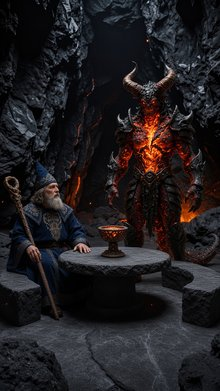
Front Medium Shot of Epic Wizard from <IMAGE_1> and Giant Ogre from <IMAGE_2> in the forest from <IMAGE_0>. In the midground center, Epic Wizard is standing on the dirt pathway, facing forward toward the camera, holding the Wooden Staff upright with both hands. Behind him in the background, the Giant Ogre stands towering near the stone archway. Epic Wizard's appearance, long grey hair, full grey beard, and crimson wizard robe are preserved from <IMAGE_1>. Giant Ogre is positioned in the background, his massive green muscular frame and tattered loincloth preserved from <IMAGE_2>. The scene shows the dirt path and gnarled oak trees, with the stone archway visible in the background. Late afternoon sunlight filters through the dense tree canopy, casting long diagonal golden rays and soft blue shadows across the forest floor with no artificial light sources.
A front medium shot set within the atmospheric forest environment of <IMAGE_0>, featuring the dirt pathway, gnarled oak tree roots, and the moss-covered stone archway. In the center midground, standing on the dirt path and facing directly toward the camera, is the wizard from <IMAGE_1>. He retains his long grey hair, full grey beard, and deep crimson hooded robe with gold-embroidered cuffs and a knotted rope belt, but is now holding a tall, gnarled wooden staff upright with both hands. He wears his dark brown boots. In the background, towering near the stone archway, is the giant green ogre from <IMAGE_2>. The ogre maintains his massive, muscular green physique, metal ring collar, and tattered brown fur loincloth with black stitching, standing barefoot and providing a sense of immense scale. The scene is illuminated by natural late afternoon sunlight filtering through the dense tree canopy, casting long, diagonal golden rays and soft blue shadows across the leaf-strewn forest floor, with no artificial light sources present.

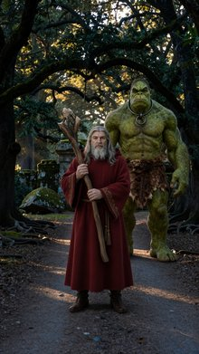
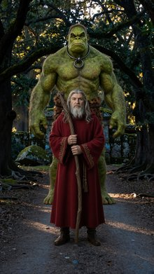
A Front Medium Two Shot from a slightly low angle, capturing the tomato woman from <IMAGE_1> and the red demon from <IMAGE_2> standing face-to-face on the cracked concrete sidewalk from <IMAGE_0>. On the frame-left side of the midground, the tomato woman from <IMAGE_1>, a red spherical anthropomorphic tomato wearing a vibrant crimson silk slip dress and a gold chainlink waist belt, stands with her shoulders squared and torso angled toward the right. She holds a small, plump, elongated red San Marzano tomato with a green stem in her right hand at waist height. Her gaze is directed frame-right toward the red demon. On the frame-right side of the midground, the red demon from <IMAGE_2> stands facing frame-left, dressed in a tailored charcoal gray wool suit jacket with his hands tucked into his trouser pockets, looking directly back at the tomato woman. Both are visible from the waist up. The weathered brick apartment building facade with its mounted streetlamp from <IMAGE_0> is visible in the background, casting a warm amber glow over both characters, contrasting with the cool, distant glare of streetlights reflecting off the dark asphalt street.
A cinematic, slightly low-angle front medium two-shot set on the cracked concrete sidewalk at night, utilizing the street environment from <IMAGE_0> as the background. On the frame-left side of the midground stands the anthropomorphic tomato woman from <IMAGE_1>, visible from the waist up. Her torso is angled toward the right with her shoulders squared, and she is wearing the same vibrant crimson silk slip dress and gold chainlink waist belt. She holds a small, plump, elongated red San Marzano tomato with a green stem in her right hand at waist height, her gaze directed frame-right. On the frame-right side of the midground stands the red demon from <IMAGE_2>, also visible from the waist up and facing frame-left. He is dressed in the same tailored charcoal gray wool suit jacket and white collared shirt, with his hands casually tucked into his trouser pockets, looking directly back at the tomato woman with his sinister, horned expression. The weathered brick apartment building facade and the mounted streetlamp from <IMAGE_0> are prominently visible in the background, casting a warm, dramatic amber glow over both characters. This warm lighting contrasts beautifully with the cool, distant glare of streetlights reflecting off the dark asphalt street in the background.

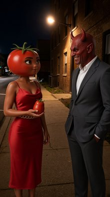
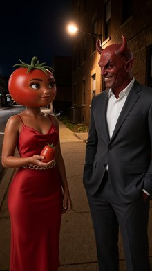
A front medium close-up shot of the red horned demon from <IMAGE_1> standing in the midground on the asphalt street from <IMAGE_0>, staring downward toward the pavement with wide, shocked eyes. The red-skinned demon from <IMAGE_1>, with his distinct horns and face shape, is wearing a tailored charcoal gray wool suit jacket, matching slim-fit trousers, and a white button-down shirt unbuttoned at the collar as seen in <IMAGE_1>. Beside him on the asphalt lies a small, plump, elongated San Marzano tomato, glossy red with its small green stem cap attached, reflecting highlights on its smooth skin. The scene is set in the nighttime environment of <IMAGE_0>, illuminated by the warm amber glow of the overhead streetlamp and the distant cool glare of city streetlights, casting dramatic shadows and highlighting the texture of the asphalt.
A front medium close-up shot set in the moody nighttime street environment of <IMAGE_0>. In the midground, standing on the dark asphalt street, is the red-skinned demon from <IMAGE_1>. He retains his distinct curved red horns, pointed ears, and facial structure, but his expression has been altered to a look of shock, featuring wide, staring eyes and a slightly open mouth as he gazes downward toward the pavement. He is dressed in the same tailored charcoal gray wool suit jacket, matching trousers, and white button-down shirt unbuttoned at the collar as seen in <IMAGE_1>. Resting on the asphalt directly beside his feet is a small, plump, elongated San Marzano tomato. The tomato is a glossy, vibrant red with a small green stem cap attached, its smooth skin catching sharp, bright highlights from the overhead lighting. The scene is illuminated by the warm amber glow of the streetlamp attached to the brick building from <IMAGE_0>, which casts dramatic, deep shadows across the asphalt and highlights the textures of the demon's suit and the brick wall on the right. The background features the cracked concrete sidewalk and the receding street with distant, cool-toned city streetlights, perfectly preserving the atmospheric, cinematic lighting of the original nighttime setting.

Front Medium Two Shot. The black-haired man from <IMAGE_1> stands upright on the dirt path from <IMAGE_0> facing south with his arms at his sides, positioned in the midground center of the frame. The brown-skinned woman from <IMAGE_2> stands two meters behind the man, facing south with her hands placed confidently on her hips in the foreground. The man's appearance, beard, and dark blue tactical zip-up hoodie over a charcoal gray t-shirt are preserved from <IMAGE_1>. The woman's long curly dark hair, emerald green velvet crop top, and denim shorts are preserved from <IMAGE_2>. The futuristic brushed titanium Plasma Sword from prop_plasma_sword rests in a holster on the man's hip, while a silver dagger in a black leather scabbard from prop_silver_dagger is tucked at the woman's waist. The background shows the gnarled oak trees lining the dirt pathway from <IMAGE_0>. Late afternoon sunlight filters through the dense tree canopy, casting long diagonal golden rays and soft blue shadows across the forest floor with no artificial light sources.
A front medium two-shot composition set within the enchanting forest environment of <IMAGE_0>. The scene features the gnarled oak trees, the moss-covered stone archway, and the leaf-strewn dirt path from <IMAGE_0> as the background. In the foreground, the brown-skinned woman from <IMAGE_2> stands facing the camera (south), positioned confidently with her hands resting on her hips. She retains her long, voluminous curly dark hair, emerald green velvet crop top, distressed denim shorts, and white platform sneakers from <IMAGE_2>, but now features an ornate silver dagger secured in a black leather scabbard tucked into her waistband. Positioned two meters behind her, in the center midground of the path, is the black-haired, bearded man from <IMAGE_1>. He stands upright facing south with his arms resting naturally at his sides, wearing his dark blue tactical zip-up hoodie over a charcoal gray t-shirt, dark jeans, and black boots from <IMAGE_1>. A futuristic, brushed titanium plasma sword rests in a specialized holster on his hip. The lighting perfectly matches the natural late afternoon sunlight of <IMAGE_0>, with warm golden rays filtering through the dense tree canopy, casting long diagonal shadows and soft blue ambient light across the forest floor and the subjects. The lighting integrates the characters seamlessly into the environment, highlighting the metallic sheen of the titanium sword and the velvet texture of the crop top without any artificial studio lighting.

A Front Medium Two Shot from <IMAGE_0> showcasing the red tomato-headed woman from <IMAGE_1> and the green broccoli-headed man from <IMAGE_2> on the pool deck. In the foreground, the red tomato-headed woman from <IMAGE_1> stands upright on the blue-tiled pool deck near the edge of the sparkling swimming pool, facing screen-right toward the green broccoli-headed man from <IMAGE_2> with her hands empty, showing her crimson silk slip dress, gold heeled sandals, and gold waist chain exactly as seen in <IMAGE_1>. In the midground, the green broccoli-headed man from <IMAGE_2> stands two meters away near the poolside sun loungers, facing screen-left toward the red tomato-headed woman from <IMAGE_1> with his hands empty, wearing his emerald green linen suit and white open-collar shirt exactly as seen in <IMAGE_2>. In the midground, an empty natural tan wicker bread basket rests in the exact center of the outdoor dining table, and a small, round white ceramic olive oil bowl with a hand-painted blue geometric pattern sits on the left side of the table next to a white linen napkin. The blue-tiled swimming pool on the left, the open deck, and the outdoor dining table and chairs against the right villa wall are visible. Bright golden hour afternoon sunlight streams from the upper left, casting warm amber highlights and long soft shadows across the pool deck.
A front medium two-shot set on the sunlit wooden pool deck from <IMAGE_0>. In the foreground, standing on the blue-tiled edge of the sparkling swimming pool, is the red tomato-headed woman from <IMAGE_1>. She is facing screen-right, her hands empty at her sides, wearing her crimson silk slip dress, gold waist chain, and gold heeled sandals exactly as seen in <IMAGE_1>. In the midground, standing approximately two meters away near the poolside sun loungers, is the green broccoli-headed man from <IMAGE_2>. He is facing screen-left toward the woman, his hands empty, wearing his emerald green linen suit, open-collar white shirt, dark sunglasses, and brown loafers exactly as seen in <IMAGE_2>. The environment retains the white villa wall, the wooden dining table with chairs, and the white-curtained pergola from <IMAGE_0>. On the dining table, an empty natural tan wicker bread basket sits in the exact center, and a small, round white ceramic olive oil bowl with a hand-painted blue geometric pattern rests on the left side next to a folded white linen napkin. Bright golden hour afternoon sunlight streams from the upper left, casting warm amber highlights and long, soft shadows across the pool deck and the characters.

Left Medium Shot. A red tomato-headed woman from <IMAGE_1> sits at the outdoor dining table from <IMAGE_0> in the midground, holding a Wicker Bread Basket over her lap with a white linen napkin draped across her lap. A green, bumpy, vegetable-headed anthropomorphic broccoli man from <IMAGE_2> stands beside the red tomato-headed woman with empty hands. A Ceramic Olive Oil Bowl sits on the left side of the dining table. The scene is shot from the left side, showing the midground dining area on the wooden deck of the pool villa. The background features the white stucco villa wall and pool deck elements from <IMAGE_0>. Bright golden hour afternoon sunlight streams from the upper left, casting warm amber highlights and long soft shadows across the characters and the pool deck.
A left-side medium shot capturing the midground dining area on the wooden deck of the pool villa from <IMAGE_0>. The scene is bathed in bright golden hour afternoon sunlight streaming from the upper left, casting warm amber highlights and long, soft shadows across the characters and the deck. Seated at the wooden dining table under the white-draped pergola is the red tomato-headed woman from <IMAGE_1>. She is sitting in one of the wooden chairs, wearing her red satin slip dress, gold waist chains, and gold strappy heels. Over her lap, she is holding a woven wicker bread basket, with a white linen napkin draped across her lap. Standing beside her is the green, bumpy, vegetable-headed anthropomorphic broccoli man from <IMAGE_2>, wearing his green suit, white shirt, dark sunglasses, and brown loafers, standing with his green hands empty at his sides. On the left side of the wooden dining table sits a ceramic olive oil bowl. The background retains the white stucco villa wall on the right and the pool deck elements from <IMAGE_0>, including the blue swimming pool and white sun loungers visible in the background to the left.

A Left Medium Shot of the pool deck scene from <IMAGE_0>. In the foreground, Tomatina from <IMAGE_1>, a red tomato-headed woman wearing a vibrant crimson silk slip dress, stands on the open wooden deck facing screen-left with her body in profile and empty hands. In the midground, Purple Nurple from <IMAGE_2>, a purple glossy bulky anthropomorphic eggplant in a violet velvet smoking jacket, stands facing screen-right toward Tomatina with empty hands. On the wooden dining table from <IMAGE_0>, a wicker bread basket filled with sliced French baguettes and a small white ceramic olive oil bowl sit side by side. The blue-tiled swimming pool and open deck of <IMAGE_0> frame the scene. Bright golden hour afternoon sunlight streams from the upper left, casting warm amber highlights and long soft shadows across the characters and the pool deck. Captured in a cinematic, realistic photographic style.
A cinematic, realistic photographic left medium shot set on the sunlit wooden pool deck from <IMAGE_0>. In the foreground, the anthropomorphic tomato character from <IMAGE_1> stands on the wooden planks, her body in a left-facing profile view with empty hands. She retains her glossy red tomato head with a green stem, large expressive eyes, vibrant crimson silk slip dress, delicate gold chain belt, and gold strappy heels. In the midground, the bulky anthropomorphic eggplant character from <IMAGE_2> stands facing screen-right toward her, also with empty hands. He maintains his glossy purple eggplant head with a green stem, black sunglasses resting on top, thick gold chain, violet velvet smoking jacket with black lapels, black button-down shirt, black trousers, purple gloves, and black dress shoes, with green vines hanging from his cuffs. They are positioned near the wooden dining table from <IMAGE_0>, which now features a woven wicker bread basket filled with freshly sliced French baguettes and a small white ceramic bowl containing olive oil sitting side by side. The scene is framed by the blue-tiled swimming pool on the left and the white textured wall with a black lantern on the right. The white pergola with draped curtains, wooden chairs, and background lounge chairs from <IMAGE_0> remain intact. Bright golden hour afternoon sunlight streams from the upper left, casting warm amber highlights and long, soft shadows across the characters, the table, and the deck.

Front Medium Two Shot of the blonde man from <IMAGE_1> and the muscular bearded man from <IMAGE_2> at the bar counter in <IMAGE_0>. The slender blonde man from <IMAGE_1> is standing in the foreground at frame-left, facing frame-right towards the bar with his empty hands at his sides. He is depicted exactly as seen in <IMAGE_1>, with his distinctive slender build and wearing his sleeveless metallic silver mesh tank top. The tall, muscular bearded man from <IMAGE_2> is standing in the midground at frame-right, positioned on the equipment side behind the long wooden bar counter. His torso is angled toward the blonde man from <IMAGE_1> with both hands resting flat on the polished bar surface, shown exactly as he appears in <IMAGE_2>. The background features the illuminated glass shelves of liquor bottles from <IMAGE_0>. The scene is set at nighttime, with dim interior illumination dominated by pulsing purple and cyan laser lights, paired with warm ambient spotlights over the bar counter.
A front medium two-shot set within the atmospheric nightclub bar environment from <IMAGE_0>. In the foreground on the left side of the frame, the slender blonde man from <IMAGE_1> stands facing right towards the bar counter. He is depicted exactly as in <IMAGE_1>, wearing his metallic silver mesh tank top, black leather pants with ankle zippers, and chunky pink sneakers, with his empty hands resting casually at his sides. In the midground on the right, positioned behind the long wooden bar counter, is the tall, muscular, heavily tattooed man with a thick beard from <IMAGE_2>. He is wearing his black short-sleeved button-up shirt, black pants, and brown boots. His torso is angled toward the blonde man, and both of his tattooed hands are resting flat on the polished wooden surface of the bar. The background features the bar's illuminated glass shelves stocked with liquor bottles, the dark wooden paneling, and the hardwood floor. The scene is enveloped in dim nighttime lighting, dominated by the vibrant purple ambient glow and the striking cyan laser beams radiating from the ceiling projector, beautifully contrasted by the warm, glowing recessed spotlights under the bar's canopy.

Front Medium Two Shot of the blonde man from <IMAGE_1> and the bald muscular man from <IMAGE_2> inside the nightclub environment of <IMAGE_0>. The blonde man from <IMAGE_1> stands past the velvet rope facing the bald muscular man from <IMAGE_2> at close range with empty hands, positioned in the foreground at screen-left, his torso and gaze directed toward the other. The bald muscular man from <IMAGE_2> stands with both feet on the linoleum floor near the velvet rope, his torso facing the blonde man, positioned in the background at screen-right with his hands holding a cocktail shaker out of frame. The scene features the black velvet rope, chrome stanchions, and the dark entrance door from <IMAGE_0>. Nighttime; dim interior illumination dominated by pulsing purple and cyan laser lights, paired with warm ambient spotlights and strobe lighting washing across the central area. Photographic style with rich contrast, deep shadows, and cinematic color temperature.
A cinematic, front medium two-shot set inside the atmospheric nightclub environment from <IMAGE_0>. In the foreground on the left, standing just past the black velvet rope and chrome stanchions, is the blonde man from <IMAGE_1>. He is wearing his metallic silver mesh tank top, tight black leather pants with ankle zippers, and chunky bright pink sneakers. His torso and gaze are directed to the right, facing the other man at close range, with his hands empty and held casually at his sides. In the background on the right, standing near the velvet rope on the wooden floor, is the bald, heavily muscular man from <IMAGE_2>. He is dressed in his black tank top, black sweatpants, and black sneakers, with his torso facing the blonde man. His hands are positioned as if holding a cocktail shaker just out of frame. The scene retains the exposed brick wall, the dark wooden door, the stanchions, and the distant illuminated bar from <IMAGE_0>. The lighting is dramatic and nighttime-themed, featuring dim interior illumination dominated by the pulsing purple and cyan laser lights from <IMAGE_0>, paired with warm ambient spotlights and dynamic strobe lighting washing across the central area between the two men. The photographic style features rich contrast, deep shadows, and a cinematic color temperature.

Left Medium Shot of the tall armored soldier from <IMAGE_1>, centered on the gravel-strewn rooftop in front of the red-brick chimney stack from <IMAGE_0> on screen-right. The tall armored soldier is positioned in the midground, oriented three-quarters screen-left, holding a glowing orange sword high over his shoulder. The glowing orange sword casts a strong, bright orange light across his matte-gray carbon-fiber tactical armor and reflects intensely on the thin, horizontal glowing orange visor strip of his dark full-face stealth helmet. The tall armored soldier's identity, armor, and helmet are preserved exactly as seen in <IMAGE_1>. The background features the weathered red-brick chimney stack and rusted steel ventilation pipes from <IMAGE_0> with distant city lights blurred in a soft bokeh under a dark night sky. The scene is darkly lit, dominated by the bright orange glow of the blade reflecting off his armor and helmet visor. Change the image style to a film still. Shot on ARRI Alexa 65 with IMAX 70mm film quality. Subject rendered with extreme crystal clarity, every detail hyper-defined and sharp. Photorealistic, high-fidelity texture. Ultra-sharp focus on subject, high micro-detail rendering. Accurate skin texture, realistic fabric simulation. Massive dynamic range capture, deep shadows and bright highlights. Cinematic color science. Clean precise commercial color grade.
A cinematic left medium shot of the tall armored soldier from <IMAGE_1>, positioned in the midground and centered on a dark, gravel-strewn rooftop at night. The soldier is oriented three-quarters screen-left, retaining the exact matte-gray carbon-fiber tactical armor, black textured under-suit, thigh holster, and dark full-face stealth helmet with its thin, horizontal glowing orange visor strip seen in <IMAGE_1>. The soldier is now holding a brightly glowing orange sword high over his shoulder. The intense, luminous orange light from the blade casts a strong, dramatic glow across his armor and reflects intensely off his helmet's visor. The background features a weathered red-brick chimney stack and rusted steel ventilation pipes situated on the screen-right side of the composition. Beyond the rooftop, distant city lights are blurred in a soft, atmospheric bokeh under a dark night sky. The scene is darkly lit, dominated by the bright orange illumination of the sword. The image is styled as a high-fidelity film still shot on an ARRI Alexa 65 with IMAX 70mm film quality, featuring extreme crystal clarity, ultra-sharp focus on the subject, and hyper-defined textures on the armor and fabric. The lighting exhibits a massive dynamic range with deep shadows and bright highlights, finished with a clean, precise commercial color grade and cinematic color science.

A Left Medium Shot of the red-skinned tomato woman from <IMAGE_1> on screen-right, with her red-skinned arm pulled back behind her head as if about to throw, holding the fist-sized red San Marzano tomato from prop_explosive_tomato with its pulsating red LED light beneath its glossy skin. Her face is set in an unhinged, wild grin. She is standing inside the high-security vault chamber from <IMAGE_0>, specifically in Zone 1. The background features the steel-paneled walls in deep shadow, punctuated by thin red laser tripwires crisscrossing the room, and the waist-high glass-and-steel pedestal display case illuminated by a single overhead white spotlight shining directly down, leaving the rest of the room in dark, high-contrast shadow. Nighttime, with dim security lighting. Photographic style, cinematic-modern film still. Shot on ARRI Alexa 65 with IMAX 70mm film quality. Subject rendered with extreme crystal clarity, photorealistic, high-fidelity texture, ultra-sharp focus, and massive dynamic range.
A cinematic, left medium shot set inside the high-security vault chamber from <IMAGE_0>. Positioned on the screen-right is the red-skinned tomato woman character from <IMAGE_1>. She retains her glossy red body, green leafy stem on her head, utility belt with pouches, and red boots, but her face is now set in an unhinged, wild grin. Her pose is dynamic, with her arm pulled back behind her head as if about to throw a fist-sized red San Marzano tomato. This tomato features a pulsating red LED light glowing beneath its glossy skin. The background faithfully recreates the vault from <IMAGE_0>, including the dark steel-paneled walls, the waist-high glass-and-steel pedestal display case, the single overhead white spotlight, and the crisscrossing thin red laser tripwires. The scene features dim security lighting and deep, high-contrast shadows. The image is rendered as a modern film still shot on an ARRI Alexa 65 with IMAX 70mm film quality, boasting extreme crystal clarity, photorealistic textures, ultra-sharp focus, and massive dynamic range.

A Front Medium Shot framing the blond man from <IMAGE_1> screen-left and the black woman from <IMAGE_2> centered, sitting on the edge of the steel jail bunk bed from <IMAGE_0>. They are viewed through vertical steel bars in the foreground. The blond man from <IMAGE_1> is sitting on the edge of the lower bunk bed frame-left, looking frame-right towards the black woman from <IMAGE_2> with a sassy and dramatic expression. The black woman from <IMAGE_2> is sitting next to him, centered in the frame, torso facing forward, head turned frame-left towards the blond man with a serene, analytical facial expression. The blond man's identity, physical appearance, and orange county jail-issued jumpsuit worn loosely off one shoulder are preserved exactly as seen in <IMAGE_1>. The black woman's identity, physical appearance with long silver hair, and neatly zipped orange county jail-issued jumpsuit are preserved exactly as seen in <IMAGE_2>. The background consists of the cold, gray concrete walls of the institutional cell from <IMAGE_0>. The lighting is harsh, cold overhead fluorescent lighting casting flat, sterile shadows across the gray concrete surfaces and the characters. Cinematic-modern style, film still, shot on ARRI Alexa 65 with IMAX 70mm film quality, high-fidelity texture, ultra-sharp focus, cinematic color science.
A cinematic, front medium shot set inside the cold, gray concrete jail cell from <IMAGE_0>, viewed through the vertical steel bars of the open cell door in the foreground. Sitting on the edge of the lower metal bunk bed are the two individuals. On the frame-left side of the bunk sits the blond man from <IMAGE_1>, wearing his orange county jail-issued jumpsuit styled loosely off his left shoulder, exactly as originally seen. He is looking frame-right towards the woman with a sassy and dramatic facial expression. Sitting next to him, centered in the frame, is the Black woman from <IMAGE_2>, wearing her neatly zipped orange jumpsuit and iridescent crown, with her long silver hair cascading down. Her torso faces forward, but her head is turned frame-left to look at the man with a serene, analytical expression. The background features the stark concrete walls, the small frosted window, and the upper bunk from <IMAGE_0>. The scene is illuminated by the harsh, cold overhead fluorescent lighting of the cell, casting flat, sterile shadows. The image is rendered as a modern film still, shot on ARRI Alexa 65 with IMAX 70mm film quality, featuring ultra-sharp focus, high-fidelity textures, and cinematic color science.

A Front Wide Shot of the tomato woman from <IMAGE_1> reclining on the white-cushioned wooden lounge chair from the center of <IMAGE_0> on the sandy tropical beach. She occupies the center midground. Her body is angled slightly toward the camera, reclining back comfortably. With her frame-left hand she holds the beach cocktail from prop_beach_cocktail, which is a tall, curved hurricane glass filled with a layered orange and yellow drink, topped with a pink paper umbrella and a pineapple wedge. Her frame-right arm is raised toward the golden sun, holding the grand jewel from prop_grand_jewel, which is a massive, fist-sized cushion-cut diamond that refracts the light into sharp rainbow patterns. She is looking up toward the jewel with a satisfied, villainous smirk on her red face. Her red tomato-head body, green stem, and sparkling gold sequin bikini with a sheer white silk sarong are preserved exactly as seen in <IMAGE_1>. The sandy beach is in the foreground, and the calm turquoise ocean and horizon stretch across the background. The scene is illuminated by bright, intense, direct midday golden sunlight, casting sharp shadows on the sand under the lounge chair and creating bright highlights on her red skin. Photographic style of a cinematic-modern film still. Shot on ARRI Alexa 65 with IMAX 70mm film quality. Subject rendered with extreme crystal clarity, every detail hyper-defined and sharp. Photorealistic, high-fidelity texture, ultra-sharp focus, cinematic color science, clean precise commercial color grade.
A front wide shot set on the serene sandy tropical beach from <IMAGE_0>, featuring the calm turquoise ocean and clear blue sky stretching across the background. In the center midground, the white-cushioned wooden lounge chair and small side table from <IMAGE_0> are positioned on the light, textured sand. Reclining comfortably on the lounge chair is the 3D tomato-headed woman from <IMAGE_1>. Her body is angled slightly toward the camera in a relaxed, reclining pose. She retains her exact appearance from <IMAGE_1>, including her large red tomato head with a green stem, her smooth red skin, the sparkling gold sequin bikini top, and the sheer white silk sarong tied at her waist. Her frame-left hand holds a beach cocktail: a tall, curved hurricane glass filled with a layered orange and yellow drink, garnished with a pink paper umbrella and a pineapple wedge. Her frame-right arm is raised toward the bright golden sun, holding a massive, fist-sized cushion-cut diamond that refracts the intense sunlight into sharp, vibrant rainbow patterns. She is looking up at the diamond with a satisfied, villainous smirk on her face. The scene is illuminated by bright, intense, direct midday golden sunlight, casting sharp, distinct shadows on the sand under the lounge chair and creating bright, glossy highlights on her red skin. The image is rendered in the style of a cinematic-modern film still, shot on an ARRI Alexa 65 with IMAX 70mm film quality, featuring extreme crystal clarity, hyper-defined details, photorealistic high-fidelity textures, ultra-sharp focus, and a clean, precise commercial color grade.

An over-the-shoulder shot looking over the right shoulder of the woman in the gold jacket from <IMAGE_1> in the foreground screen-left, pointing a Glow Rapier with a glowing magenta neon blade directly toward the bearded man from <IMAGE_2> who stands calmly in the midground, centered. The woman in the gold jacket is angled away from the camera, showing her back and right shoulder in the foreground, with her appearance, long curly hair, and metallic gold cropped puffer jacket matching <IMAGE_1>. The bearded man from <IMAGE_2> is captured from a mid-shot distance, standing calmly with a neutral expression, his stocky build, black hair, beard, and sleek gray tech-fabric vest matching <IMAGE_2> perfectly. The elegant fencing rapier has a translucent glass-like blade emitting a steady, high-intensity magenta neon glow that extends across the frame, held with its polished chrome basket-style hand guard pointing forward. The scene is set in the futuristic gothic cathedral from <IMAGE_0>, featuring the wide stone-tiled floor and shattered digital-pattern stained-glass windows in the background. Late afternoon, with shafts of warm, dusty golden sunlight streaming diagonally through the fractured stained-glass windows, creating dramatic high-contrast beams across the midground. Photorealistic film still, shot on ARRI Alexa 65 with IMAX 70mm film quality, extreme crystal clarity, hyper-defined details, realistic fabric simulation, and deep shadows with high-contrast highlights.
A cinematic, over-the-shoulder shot set within the atmospheric, futuristic gothic cathedral environment from <IMAGE_0>. In the foreground on the screen-left, the woman from <IMAGE_1> is seen from behind, angled away from the camera to prominently display her back and right shoulder. Her voluminous, long curly dark hair and metallic gold cropped puffer jacket are faithfully retained from <IMAGE_1>. She is extending her arm forward, pointing an elegant fencing rapier directly at the man in the midground. The rapier features a polished chrome basket-style hand guard and a translucent, glass-like blade that emits a steady, high-intensity glowing magenta neon light, extending across the frame. In the center of the midground, the bearded man from <IMAGE_2> stands calmly facing forward with a neutral expression. He retains his exact appearance and outfit from <IMAGE_2>, including his stocky build, black hair, beard, gray tech-fabric zip-up vest over a black long-sleeve shirt, dark gray cargo pants, black fingerless gloves, and black shoes. The background features the wide, dusty stone-tiled floor and the tall, fractured stained-glass windows from <IMAGE_0>, which now incorporate shattered digital-pattern motifs. Late afternoon lighting creates dramatic, high-contrast shafts of warm, dusty golden sunlight streaming diagonally through the broken windows, illuminating the floating dust motes and casting long shadows across the stone floor. The scene is rendered as a photorealistic film still, shot on an ARRI Alexa 65 with IMAX 70mm film quality, featuring extreme crystal clarity, hyper-defined details, realistic fabric simulation, and deep shadows with striking high-contrast highlights.
Front Close Up of the woman in the gold puffer jacket from <IMAGE_1> in the midground, centered on the stone floor of the futuristic cathedral in <IMAGE_0>. She is staring down screen-left at her empty, open hands in complete, wide-eyed disbelief, with her mouth slightly open in shock. Her appearance, curly hair, and outfit of a metallic gold cropped puffer jacket over a black mesh sleeveless top must match <IMAGE_1> exactly. The background shows the shattered stained-glass windows of <IMAGE_0> with late afternoon, warm, dusty golden sunlight streaming diagonally through them, creating dramatic high-contrast beams across the midground. Shot on ARRI Alexa 65 with IMAX 70mm film quality. Subject rendered with extreme crystal clarity, every detail hyper-defined and sharp. Photorealistic, high-fidelity texture. Ultra-sharp focus on subject, high micro-detail rendering.
A cinematic, photorealistic medium close-up shot of the woman from <IMAGE_1>, now positioned in the center of the midground on the dusty stone floor of the gothic cathedral from <IMAGE_0>. She retains her exact appearance and outfit from <IMAGE_1>: voluminous dark curly hair, a metallic gold cropped puffer jacket, a black mesh sleeveless crop top, and black cargo sweatpants. Her pose and expression are completely transformed; she is staring down and to the screen-left at her empty, open hands held out in front of her, her face showing complete, wide-eyed disbelief with her mouth slightly open in shock. The background faithfully recreates the grand, ancient cathedral interior of <IMAGE_0>, featuring the tall stone pillars, gothic arches, and the large stained-glass windows, which are now visibly shattered. Warm, late-afternoon golden sunlight streams diagonally through the broken glass and dusty air, casting dramatic, high-contrast volumetric light beams that cut across the midground and illuminate the woman. The stone floor beneath her is scattered with debris and catches the intricate, glowing light patterns from the windows. The image is rendered with the visual quality of an ARRI Alexa 65 with IMAX 70mm film, featuring ultra-sharp focus on the woman with extreme crystal clarity and high-fidelity textures on her clothing, while the majestic, sun-drenched cathedral background features a cinematic depth of field.

Front Close Up shot of the blond man from <IMAGE_1> positioned on screen-left in the foreground of the cluttered workshop from <IMAGE_0>. The blond man from <IMAGE_1>, with his identity, facial features, and stylish fantasy adventurer outfit featuring a cropped, sheer mesh black tunic under a structured purple leather doublet with metallic gold trim preserved exactly as seen in <IMAGE_1>, is standing empty-handed. His head is slightly bowed, and his gaze is cast downwards, looking down at the dusty wooden workbench filled with glass beakers and open books. His body is oriented towards frame-right in a profile to three-quarter view. The scene is set against the backdrop of the dusty wooden workbench and shelves packed with jars and scrolls from <IMAGE_0> in a tight close-up frame. The lighting is dim and atmospheric, with the warm amber glow of candlelight on the workbench casting soft shadows across his face and the room, while a faint, cool blue dusk light filters in from the background. The image is rendered in the style of an IMAX photorealistic film still, shot on ARRI Alexa 65 with IMAX 70mm film quality, capturing hyper-defined, sharp details of his skin texture and the fabric of his doublet with massive dynamic range and cinematic color grading.
A tight, front close-up shot featuring the blond man from <IMAGE_1> positioned on the screen-left in the foreground, seamlessly integrated into the dimly lit, atmospheric stone workshop from <IMAGE_0>. The man retains his exact identity, facial features, and stylish fantasy adventurer outfit from <IMAGE_1>, wearing the cropped, sheer black mesh tunic underneath a structured purple leather doublet adorned with intricate metallic gold trim. He stands empty-handed, his body oriented towards the frame-right in a three-quarter profile view. His head is slightly bowed, and his gaze is cast downwards, looking intently at the dusty wooden workbench. The workbench, carried over from <IMAGE_0>, occupies the lower right foreground, filled with the same open book, glass beakers, and a lit candle. The warm, amber glow of the candlelight casts soft, dramatic shadows across the man's face and highlights the rich textures of his leather doublet, while a faint, cool blue dusk light filters in from the background's round window. The background features the stone walls, arched ceiling, and shelves packed with jars and scrolls from <IMAGE_0>, softly blurred to create a shallow depth of field. The image is rendered in the style of an IMAX photorealistic film still, shot on an ARRI Alexa 65 with IMAX 70mm film quality, featuring hyper-defined, sharp details of his skin texture and the doublet's fabric, massive dynamic range, cinematic color grading, and creamy bokeh.
A Drone Shot. Tomatina, the anthropomorphic tomato woman from <IMAGE_1>, appears small as she stands on the concrete rooftop corner from <IMAGE_0> in the screen-right midground. Her torso is angled toward the city while she looks frame-left, her glossy red surface catching the light. She is wearing the dark crimson leather jumpsuit with gold zippers and utility belt exactly as seen in <IMAGE_1>. The sweeping view expands to show the massive, glowing metropolis skyline stretching into the background. The scene is illuminated by cool starlight and thousands of distant amber city lights, casting dramatic edge highlights on her spherical form and the roof's concrete details. Change the image style to an IMAX photorealistic film still. Shot on ARRI Alexa 65 with IMAX 70mm film quality. Subject rendered with extreme crystal clarity, every detail hyper-defined and sharp. Photorealistic, high-fidelity texture. Ultra-sharp focus on subject, high micro-detail rendering. Massive dynamic range capture, deep shadows and bright highlights. Cinematic color science. Clean precise commercial color grade.
A wide-angle drone shot transforming the night-time rooftop scene from <IMAGE_0> into a breathtaking IMAX photorealistic film still. The camera perspective is shifted to a high-angle, sweeping drone view, expanding the composition to reveal a massive, glowing metropolis skyline stretching far into the background under a dark, starry night sky. The textured concrete surface, the low parapet wall on the left, and the row of silver cylindrical water tanks on the right from <IMAGE_0> are retained but rendered with extreme crystal clarity and high-fidelity photorealistic textures. In the screen-right midground, the anthropomorphic tomato woman from <IMAGE_1> stands small in scale relative to the vast environment. She is wearing the exact dark crimson leather jumpsuit with gold zippers, utility belt with pouches, and boots seen in <IMAGE_1>, now featuring hyper-defined, realistic leather textures. Her torso is angled toward the distant city, while her head looks frame-left, her glossy red spherical surface catching the ambient light. The scene is illuminated by cool starlight and thousands of distant amber city lights, casting dramatic edge highlights and rim lighting on her form and the roof's concrete details. The image emulates an ARRI Alexa 65 with IMAX 70mm film quality, featuring ultra-sharp focus on the subject, massive dynamic range, deep shadows, bright highlights, and a clean, precise commercial cinematic color grade.
A Back Wide Shot. The red tomato woman from <IMAGE_1> is seen from behind, positioned screen-right in the midground of the gravel rooftop from <IMAGE_0>. She stands solo against the low concrete parapet wall, looking out toward the horizon. Her body and head are turned away from the camera, revealing only the back of her head and body. In her hand at her side, she holds the bitten glossy red tactical tomato prop. The background is a breathtaking view of the glowing, sprawling city skyline beneath a starlit night sky. The scene is illuminated by a cool blue ambient starlight that casts over her form, with warm amber glow from the distant city streetlights creating high-contrast edge highlights. IMAX photorealistic film still. Shot on ARRI Alexa 65 with IMAX 70mm film quality. Subject rendered with extreme crystal clarity, every detail hyper-defined and sharp. Photorealistic, high-fidelity texture, cinematic color science.
A wide, cinematic back-view shot set on the expansive gravel rooftop seen in <IMAGE_0>. Positioned in the midground on the right side of the frame is the tomato-headed character from <IMAGE_1>, now viewed entirely from behind. She stands facing away from the camera, looking out over the low concrete parapet wall toward the distant horizon. The back of her large, round red tomato head is visible, topped with the green leafy stem. She wears the same red leather jumpsuit, utility belt, and red boots from <IMAGE_1>, with the intricate seams, folds, and textures of the leather clearly defined from the rear perspective. In her right hand, resting at her side, she holds a glossy red tomato prop with a distinct bite taken out of it, revealing its juicy interior. The environment retains the textured gravel surface and the row of metallic water tanks and pipes on the right from <IMAGE_0>. The background features the breathtaking, sprawling city skyline glowing with warm amber streetlights beneath a deep, starlit night sky. The scene is illuminated by a cool blue ambient starlight that washes over the rooftop and the character's form, while the warm amber glow from the distant city creates striking, high-contrast edge highlights along her silhouette. The image is rendered as an IMAX photorealistic film still, simulating the visual quality of an ARRI Alexa 65 with IMAX 70mm film, featuring extreme crystal clarity, hyper-defined textures, and rich cinematic color science.
Front Medium Shot of the red humanoid woman from <IMAGE_1> seated on the leather sofa from <IMAGE_0> screen-centered in the midground. She is wearing the dark crimson leather jumpsuit exactly as shown in <IMAGE_1>. Her body is oriented towards the front, her head turned slightly screen-left, and her gaze is looking up towards screen-left with a smug, unhinged smirk. In her hand, she holds a plump, glossy red San Marzano tomato with a bright green stem, matching the description of the tactical tomato. The background is the rustic brick wall lit by the warm, orange pendant light from <IMAGE_0>, with the wooden floor and sofa clearly visible. Change the image style to an IMAX photorealistic film still. Shot on ARRI Alexa 65 with IMAX 70mm film quality. Subject rendered with extreme crystal clarity, every detail hyper-defined and sharp. Photorealistic, high-fidelity texture. Ultra-sharp focus on subject, high micro-detail rendering. Accurate skin texture, realistic fabric simulation. Massive dynamic range capture, deep shadows and bright highlights. Cinematic color science. Clean precise commercial color grade.
A front medium shot of the humanoid tomato woman from <IMAGE_1>, now seated on the brown leather sofa from <IMAGE_0>. She is positioned screen-centered in the midground of the dimly lit, rustic room. She is wearing the exact dark crimson leather jumpsuit, tactical belt with pouches, and boots as seen in <IMAGE_1>. Her body faces forward, but her tomato head is turned slightly to the screen-left, with her large eyes looking up and to the left, wearing a smug, unhinged smirk. In one hand, she holds a plump, glossy red San Marzano tomato with a bright green stem. The background features the exposed red brick wall from <IMAGE_0>, illuminated by the warm, orange glow of the overhead pendant light, which casts deep, dramatic shadows. The wooden floor and the leather sofa are clearly visible. In the foreground, the large wooden table with the glowing blue map from <IMAGE_0> is partially visible. The entire scene is rendered as an IMAX photorealistic film still, shot on an ARRI Alexa 65 with IMAX 70mm film quality. The image boasts extreme crystal clarity, with every detail hyper-defined and sharp. The subject features photorealistic, high-fidelity textures, including realistic skin texture on her tomato head and accurate fabric simulation on her leather suit. The lighting features a massive dynamic range, capturing deep shadows and bright highlights from both the warm overhead light and the cool blue glow of the table, finished with a clean, precise commercial color grade and cinematic color science.

A Front Wide Shot from on the stage looking north, showing the silver-haired dark-skinned woman from <IMAGE_1> lying flat on her back in the center of the wooden stage floor from <IMAGE_0>. The silver-haired dark-skinned woman from <IMAGE_1>, wearing her metallic silver corseted gown exactly as seen in <IMAGE_1>, lies centered on the stage with both of her shoulders contacting the wooden surface, her face turned up towards the ceiling with a neutral, emotionally restrained expression. The wooden stage floor from <IMAGE_0> dominates the foreground, with the dining table and two metal chairs visible in the background. The stage is bathed in a cold blue glow from stage lights, making the wet fabric of her silver dress glisten under the light. Change the image style to an IMAX photorealistic film still. Shot on ARRI Alexa 65 with IMAX 70mm film quality. Subject rendered with extreme crystal clarity, every detail hyper-defined and sharp. Photorealistic, high-fidelity texture. Ultra-sharp focus on subject, high micro-detail rendering. Freckles/skin pores visible, accurate skin texture, realistic fabric simulation. Massive dynamic range capture, deep shadows and bright highlights. Cinematic color science. Clean precise commercial color grade.
A front wide shot taken from on the wooden stage looking north, combining the environments and subjects of <IMAGE_0> and <IMAGE_1>. The silver-haired, dark-skinned woman from <IMAGE_1> is now lying flat on her back in the center of the wooden stage floor from <IMAGE_0>. She is wearing the exact same metallic silver corseted gown with glowing blue circuit patterns, silver shoulder pads, and the iridescent crown-like headpiece as seen in <IMAGE_1>. Both of her shoulders are firmly contacting the wooden surface, and her face is turned directly upwards toward the sky with a neutral, emotionally restrained expression. Her silver hair spreads out on the wood. The metallic fabric of her gown is now completely wet, clinging to her form and glistening intensely under a new cold blue glow from overhead stage lights. The wooden stage floor dominates the foreground, with its planks, grain, and wooden steps clearly visible. In the background, the wooden dining table, two metal chairs, low beige wall, and beige shade sails from <IMAGE_0> remain intact. The entire scene is rendered as an IMAX photorealistic film still, shot on an ARRI Alexa 65 with IMAX 70mm film quality. The image features extreme crystal clarity, ultra-sharp focus on the woman, and high micro-detail rendering, revealing visible freckles, skin pores, and accurate skin texture. The wet metallic fabric exhibits realistic fabric simulation and high-fidelity texture. The lighting features a massive dynamic range capture with deep shadows and bright highlights, enhanced by cinematic color science and a clean, precise commercial color grade that emphasizes the dramatic blue stage lighting.

Two Shot of the red-skinned demon from <IMAGE_1> and the tomato character from <IMAGE_2> seated at the round wrought-iron table in the outdoor dining patio from <IMAGE_0>. The red-skinned demon from <IMAGE_1> is seated on the west chair frame-left, looking frame-right towards his dining partner with a relaxed expression. He is shown from the waist up, preserving his muscular build, horns, and black Hawaiian shirt with yellow hibiscus flowers as seen in <IMAGE_1>. The glossy, red, curvy anthropomorphic tomato character from <IMAGE_2> is seated on the east chair frame-right, facing frame-left towards the demon, shown from the waist up while wearing her sparkling emerald-green sequined cocktail dress from <IMAGE_2>. Between them on the round table sits the wide, shallow off-white ceramic bowl filled with a steaming mound of spaghetti in chunky red marinara sauce with a single silver fork embedded in the center, placed under the soft, warm glow of the single burning candle. The background shows the black iron fence and quiet city street at night. The lighting is dominated by the warm yellow glow of the candle on the table, casting soft light on the characters, with dim blue ambient street lighting in the distant background. This is an IMAX photorealistic film still. Shot on ARRI Alexa 65 with IMAX 70mm film quality. Subject rendered with extreme crystal clarity, every detail hyper-defined and sharp. Photorealistic, high-fidelity texture. Ultra-sharp focus on subject, high micro-detail rendering. Skin pores visible, accurate skin texture, realistic fabric simulation. Massive dynamic range capture, deep shadows and bright highlights. Cinematic color science. Clean precise commercial color grade.
A photorealistic, cinematic two-shot set in the outdoor dining patio at night from <IMAGE_0>. Seated on the left dark metal chair is the red-skinned demon from <IMAGE_1>, shown from the waist up. He retains his muscular build, prominent horns, and black short-sleeved Hawaiian shirt with yellow hibiscus flowers, but now wears a relaxed expression as he looks frame-right towards his dining partner. Seated on the right chair is the anthropomorphic tomato character from <IMAGE_2>, also shown from the waist up, facing frame-left towards the demon. She features her glossy red tomato head with a green leafy stem and wears her sparkling emerald-green sequined cocktail dress. Between them on the round wrought-iron table rests the glowing candle from <IMAGE_0>, which now illuminates a wide, shallow off-white ceramic bowl filled with a steaming mound of spaghetti in chunky red marinara sauce, with a single silver fork embedded in the center. The background features the same black iron fence and quiet city street at night from <IMAGE_0>. The lighting is dominated by the warm yellow glow of the candle, casting soft, dramatic light on the characters, contrasting with the dim blue ambient street lighting in the distant background. The image is styled as an IMAX photorealistic film still shot on an ARRI Alexa 65 with IMAX 70mm film quality, featuring extreme crystal clarity, high-fidelity textures, visible skin pores on the demon, realistic fabric simulation on the shirt, and a massive dynamic range with deep shadows and bright highlights.
High Angle Shot looking down at the crosswalk from <IMAGE_0>. The red-skinned demon from <IMAGE_1> stands at the edge of the sidewalk frame-right, staring down at a large, irregular puddle of thick, dark red tomato ketchup from prop_ketchup_splat splattered on the concrete and road pavement in the center of the frame. The red-skinned demon from <IMAGE_1>, with his distinctive horns, is captured from a high angle as he stands near the curb, looking down frame-left toward the splatter; his torso is angled slightly towards the street while his head is tilted down in a contemplative gaze. He is wearing his black short-sleeved Hawaiian shirt with yellow hibiscus flowers, exactly as shown in <IMAGE_1>. The frame captures the concrete sidewalk corner, the painted white crosswalk stripes, and the dark asphalt road of <IMAGE_0>. The scene is illuminated by the harsh amber light from the overhead streetlamp, casting long, dramatic dark shadows onto the wet asphalt, highlighting the glossy, light-reflective surface of the ketchup puddle. Change the image style to an IMAX photorealistic film still. Shot on ARRI Alexa 65 with IMAX 70mm film quality. Subject rendered with extreme crystal clarity, every detail hyper-defined and sharp. Photorealistic, high-fidelity texture. Ultra-sharp focus on subject, high micro-detail rendering. Freckles/skin pores visible, accurate skin texture, realistic fabric simulation. Massive dynamic range capture, deep shadows and bright highlights. Cinematic color science. Clean precise commercial color grade.
A high-angle shot looking down at the nighttime street corner and crosswalk from <IMAGE_0>, now rendered as an IMAX photorealistic film still shot on an ARRI Alexa 65 with IMAX 70mm film quality. Standing at the edge of the concrete sidewalk on the right side of the frame is the muscular, red-skinned demon from <IMAGE_1>. Captured from this elevated perspective, the demon's torso is angled slightly toward the street, and his horned head is tilted down in a contemplative gaze, looking frame-left. He is wearing the exact same black short-sleeved Hawaiian shirt with yellow hibiscus flowers from <IMAGE_1>, featuring realistic fabric simulation and natural draping. His red skin is rendered with extreme crystal clarity, showcasing hyper-defined micro-details like skin pores, freckles, and accurate skin texture. In the center of the frame, splattered across the concrete and the dark asphalt road pavement, is a large, irregular puddle of thick, dark red tomato ketchup. The scene is illuminated by the harsh amber light from the overhead streetlamp seen in <IMAGE_0>, which casts long, dramatic dark shadows onto the wet asphalt and highlights the glossy, light-reflective surface of the ketchup puddle. The composition captures the concrete sidewalk corner and the painted white crosswalk stripes with ultra-sharp focus and high-fidelity texture. The image features a massive dynamic range capture, deep shadows, bright highlights, cinematic color science, and a clean, precise commercial color grade.
Front Close Up on the red-skinned demon from <IMAGE_1>, centered in the frame. The red-skinned demon is situated on the sidewalk corner under the streetlamp from <IMAGE_0>. His hands are pressed to the sides of his face, his horns casting sharp shadows, and his mouth is wide open in a silent scream. The red-skinned demon from <IMAGE_1>, with his distinctive red skin, muscular build, and horns, has his face positioned directly under the streetlamp, his body orientation facing forward with his gaze locked forward. He is shown exactly as seen in <IMAGE_1>, wearing the black short-sleeved Hawaiian shirt with yellow hibiscus flowers. The concrete sidewalk and the base of the tall metal streetlamp pole from <IMAGE_0> are visible in the background, with the rest of the street corner excluded. The scene is illuminated by the harsh amber light shining directly down from the overhead streetlamp, casting long, dramatic dark shadows. Change the image style to an IMAX photorealistic film still. Shot on ARRI Alexa 65 with IMAX 70mm film quality. Subject rendered with extreme crystal clarity, every detail hyper-defined and sharp. Photorealistic, high-fidelity texture. Ultra-sharp focus on subject, high micro-detail rendering. Freckles/skin pores visible, accurate skin texture, realistic fabric simulation. Massive dynamic range capture, deep shadows and bright highlights. Cinematic color science. Clean precise commercial color grade.
A front close-up shot of the muscular, red-skinned demon from <IMAGE_1>, now situated on the concrete sidewalk corner directly beneath the tall metal streetlamp from <IMAGE_0>. The demon's pose is dramatically altered: his hands are pressed tightly to the sides of his face, and his mouth is wide open in a terrifying silent scream, with his gaze locked intensely forward. He retains his prominent horns, red skin, and the black short-sleeved Hawaiian shirt with yellow hibiscus flowers from <IMAGE_1>. The background is tightly framed to show only the concrete sidewalk and the base of the streetlamp pole from <IMAGE_0>, excluding the rest of the street and crosswalk. The scene is illuminated by the harsh, bright amber light shining directly down from the overhead streetlamp, casting long, dramatic dark shadows, particularly from his horns across his face and the background. The image is rendered as an IMAX photorealistic film still, shot on an ARRI Alexa 65 with IMAX 70mm film quality. The subject is captured with extreme crystal clarity and ultra-sharp focus, featuring high-fidelity micro-detail rendering that reveals visible skin pores, freckles, and accurate skin texture on the demon, alongside realistic fabric simulation on the Hawaiian shirt. The lighting features a massive dynamic range with deep shadows and bright highlights, finished with a cinematic color science and a clean, precise commercial color grade.
Front Close Up of the green broccoli man from <IMAGE_1> standing shocked in the foreground. He is facing forward, with his head and torso facing the camera, his eyes wide in surprise as the plump, glossy red tomato with a bright green stem from the prop description collides directly with his head. His identity, green bumpy muscular appearance, and white tropical flower lei wardrobe from <IMAGE_1> are preserved exactly. The scene is set in the luxury open-air cabana from <IMAGE_0>, with the dark teak wood floor and sheer white curtains visible in the background. The lighting is a soft, even frontal glow on the subject, blended with warm, golden hour sunlight filtering through the curtains. The image is a 4K lifestyle vlog photograph with extremely smooth processed skin, zero grain, and a warm punchy color grade with boosted saturation.
A 4K lifestyle vlog photograph featuring a front close-up of the green broccoli-headed character from <IMAGE_1> standing in the foreground. The character's head and torso face the camera directly, but his expression is now one of shock, with his mouth open and eyes wide in surprise behind his black sunglasses. A plump, glossy red tomato with a bright green stem is captured in mid-air, colliding directly with the side of his textured broccoli head, creating a dynamic, slight splash of juice and motion blur to emphasize the impact. The character's identity and wardrobe from <IMAGE_1> are perfectly preserved, including his green bumpy muscular appearance, the white Hawaiian shirt with orange flowers and green palm leaves, the thick white tropical flower lei, and the gold chain. The scene is set within the luxury open-air cabana from <IMAGE_0>. The background is softly blurred to maintain focus on the character, but clearly displays the dark teak wood floor, the sheer white curtains tied to the dark wooden pillars, and the white daybed with the bamboo table. The lighting features a soft, even frontal glow on the subject, seamlessly blended with the warm, golden hour sunlight filtering through the cabana curtains. The overall image has extremely smooth processed skin, zero grain, and a warm, punchy color grade with boosted saturation.
Right Medium Shot. The fair-skinned blond man from <IMAGE_1> is standing in the midground, framed screen-left on the dancefloor from <IMAGE_0> in a right three-quarter perspective. He poses flamboyantly, with his torso turned to the right and looking forward towards the camera with a sassy, confident expression. Other club patrons are visible on screen-right backing away in the background. The fair-skinned blond man's identity, physical appearance, and wardrobe—consisting of a sheer black mesh crop top, metallic silver skinny pants, and a thin black leather choker—are preserved exactly as shown in <IMAGE_1>. The spacious, open wood-paneled dancefloor from <IMAGE_0> extends across the frame. Pulsating green strobe lights create high-contrast shadows on the wood floor and illuminate the scene. IMAX photorealistic film still. Shot on ARRI Alexa 65 with IMAX 70mm film quality. Subject rendered with extreme crystal clarity, every detail hyper-defined and sharp. Photorealistic, high-fidelity texture. Ultra-sharp focus on subject, high micro-detail rendering. Freckles/skin pores visible, accurate skin texture, realistic fabric simulation. Massive dynamic range capture, deep shadows and bright highlights. Cinematic color science. Clean precise commercial color grade.
A photorealistic, cinematic medium shot set within the vibrant nightclub environment from <IMAGE_0>. The fair-skinned blond man from <IMAGE_1> is standing in the midground, framed on the left side of the composition on the spacious wood-paneled dancefloor. He is captured in a dynamic, flamboyant pose with his torso turned towards the right, while his head is turned back to look directly at the camera with a sassy, confident expression. He is wearing the exact same wardrobe seen in <IMAGE_1>: a sheer black mesh crop top, metallic silver skinny pants, silver sneakers, and a thin black leather choker with a silver ring. The scene is dramatically illuminated by the pulsating green strobe lights and intersecting beams from <IMAGE_0>, which cast high-contrast shadows and vibrant green reflections across the textured wooden floorboards. In the background on the right side of the frame, a few other club patrons are visible in the blurred, atmospheric lighting, appearing to back away from the dancefloor. The image features a massive dynamic range, deep shadows, and bright highlights, mimicking an IMAX 70mm film still shot on an ARRI Alexa 65. The man is rendered with extreme crystal clarity and ultra-sharp focus, highlighting hyper-defined details like skin pores, subtle freckles, and realistic fabric simulation on the mesh top, all finished with a clean, precise commercial color grade emphasizing the cinematic green tones.

Front Medium Shot. The pale, bald, mustached vampire Nosferatu from <IMAGE_1> is centered in the frame, emerging from swirling, dense black shadows in the wet alleyway of <IMAGE_0>. His old, corpse-pale face, long pointed ears, and sharp features are illuminated by a sudden eerie, vibrant green glow rising from below, casting strong high-contrast highlights and deep shadows across his face. His eyes glint with ancient malice. He is wearing his high-collared, tattered black Victorian velvet coat from <IMAGE_1>, tightly wrapped around his slender frame. The wet brick walls of <IMAGE_0> are visible on either side, slick with moisture. Change the image style to an IMAX photorealistic film still. Shot on ARRI Alexa 65 with IMAX 70mm film quality. Subject rendered with extreme crystal clarity, every detail hyper-defined and sharp. Photorealistic, high-fidelity texture. Ultra-sharp focus on subject, high micro-detail rendering. Skin pores visible, accurate skin texture, realistic fabric simulation. Massive dynamic range capture, deep shadows and bright highlights. Cinematic color science. Clean precise commercial color grade.
A front medium shot of the pale, bald, mustached vampire Nosferatu character from <IMAGE_1>, now positioned in the center of the dark, wet alleyway from <IMAGE_0>. He is seen from the waist up, emerging menacingly from swirling, dense black shadows. His face is dramatically illuminated by a sudden, eerie, vibrant green glow rising from below, casting strong high-contrast highlights and deep, sinister shadows upward across his gaunt features, long pointed ears, and corpse-pale skin. His eyes glint with ancient malice. He is wearing the same high-collared, tattered black Victorian velvet coat with the thick fur collar from <IMAGE_1>, tightly wrapped around his slender frame. The background features the wet brick walls of the alleyway from <IMAGE_0>, slick with moisture and reflecting the ambient light, with the green dumpster and streetlights visible in the dimly lit background. The image is rendered in the style of an IMAX photorealistic film still, as if shot on an ARRI Alexa 65 with IMAX 70mm film quality. The subject is rendered with extreme crystal clarity and ultra-sharp focus, featuring hyper-defined micro-details such as visible skin pores, accurate skin texture, and realistic fabric simulation on the velvet coat. The scene boasts a massive dynamic range with deep shadows and bright highlights, utilizing cinematic color science and a clean, precise commercial color grade.

Front Close Up. In the foreground of the dark alley from <IMAGE_0>, the tall muscular white anthropomorphic rabbit from <IMAGE_1> is seated on the wet asphalt floor, clutching his bleeding arm in pain. His white fur is covered in dust, and he stares wide-eyed off-frame screen-right with an expression of shock and fear. Deep, high-contrast shadows are cast over half of his face. His torn pinstripe mobster vest with a gold pocket watch chain and dark trousers are visible, matching <IMAGE_1> exactly. In the background, the wet asphalt lane and the base of the brick walls from <IMAGE_0> are visible, with reflections of pale light in the puddles below him. The scene is illuminated by the harsh, flickering cool-blue overhead light, casting deep shadows. Change the image style to an IMAX photorealistic film still. Shot on ARRI Alexa 65 with IMAX 70mm film quality. Subject rendered with extreme crystal clarity, every detail hyper-defined and sharp. Photorealistic, high-fidelity texture. Ultra-sharp focus on subject, high micro-detail rendering. Skin pores visible, accurate skin texture, realistic fabric simulation. Massive dynamic range capture, deep shadows and bright highlights. Cinematic color science. Clean precise commercial color grade.
A front close-up, IMAX photorealistic film still featuring the tall, muscular white anthropomorphic rabbit from <IMAGE_1>, now situated in the dark, wet alleyway from <IMAGE_0>. The rabbit is seated on the wet asphalt floor in the foreground, tightly clutching a bleeding wound on his arm in visible pain. His white fur is heavily covered in dust and grime, and he stares wide-eyed off-screen to the right with an expression of profound shock and fear. Deep, high-contrast shadows are cast over half of his face, emphasizing his human-like facial features, thick eyebrows, and large rabbit ears. He wears the exact same torn, dark pinstripe mobster vest with the gold pocket watch chain and dark trousers seen in <IMAGE_1>, with the fabric simulation showing realistic fraying and tears. The background consists of the wet asphalt lane and the base of the brick walls from <IMAGE_0>, with the puddles below him reflecting the pale, harsh, cool-blue light from the overhead streetlights. The scene is illuminated by this flickering cool-blue overhead light, casting deep shadows. The image is rendered with extreme crystal clarity, mimicking an ARRI Alexa 65 with IMAX 70mm film quality, featuring ultra-sharp focus on the subject, high micro-detail rendering, visible skin pores, accurate skin texture, massive dynamic range capture, deep shadows, bright highlights, cinematic color science, and a clean, precise commercial color grade.

A Front Medium Shot of the pale, bald man from <IMAGE_1> centered in the frame, standing in the middle of the dark alleyway from <IMAGE_0>. He is cradling the muscular white anthropomorphic rabbit from <IMAGE_2> in his long, pale arms, holding him close to his chest where the rabbit looks small and vulnerable. Black smoke begins to swirl around their feet on the wet, reflective asphalt. The environment is the narrow, wet asphalt alley from <IMAGE_0> bounded by high brick walls, with a green metal dumpster in the midground and the dark exit in the background. Moonlight illuminates the pair, casting high-contrast shadows down the alleyway. Change the image style to an IMAX photorealistic film still. Shot on ARRI Alexa 65 with IMAX 70mm film quality. Subject rendered with extreme crystal clarity, every detail hyper-defined and sharp. Photorealistic, high-fidelity texture. Ultra-sharp focus on subject, high micro-detail rendering. Freckles/skin pores visible, accurate skin texture, realistic fabric simulation. Massive dynamic range capture, deep shadows and bright highlights. Cinematic color science. Clean precise commercial color grade.
A front medium shot of the pale, balding man with a mustache from <IMAGE_1> standing centered in the dark, narrow brick alleyway from <IMAGE_0>. The man, dressed in his long black velvet coat with a fur collar and dark vest, is cradling the muscular white anthropomorphic rabbit from <IMAGE_2> in his long, pale arms. The rabbit, wearing its torn pinstripe suit and pocket watch, is held close to the man's chest, appearing small and vulnerable. Black smoke swirls around their feet on the wet, reflective asphalt. The background retains the alleyway's green metal dumpster, streetlamp, and dark exit. The scene is rendered as an IMAX photorealistic film still, shot on ARRI Alexa 65 with 70mm film quality. It features extreme crystal clarity, hyper-defined skin pores, realistic fabric textures, and a cinematic color grade with high-contrast moonlight and deep shadows.
Front Medium Shot. The fair-skinned blonde woman from <IMAGE_1> and the green bipedal felt frog from <IMAGE_2> are in the clearing from <IMAGE_0>. The blonde woman from <IMAGE_1> is standing centered in the foreground, holding a sleek modern smartphone with a pastel pink protective case on an extendable silver selfie stick out in her frame-right hand. She is looking at the phone with a ditsy, confused expression, her body facing forward. Her appearance, blonde hair, blue eyes, and her classic blue pinafore dress over a white puffed-sleeve blouse with a black bow headband are exactly as seen in <IMAGE_1>. In the midground frame-right, the green bipedal felt frog from <IMAGE_2> is seated on the mossy log from <IMAGE_0>. He is holding a polished dark mahogany wooden tobacco pipe with a thin spiral of blue smoke rising from it. He is looking frame-left toward the woman with a calm, relaxed expression, wearing a miniature gold chain necklace with a small leaf pendant as seen in <IMAGE_2>. The background shows the clearing, the mossy log, and the giant spotted mushroom. Warm golden hour sunlight filters through the lavender leaves, casting a magical glow with soft-focused bokeh particles in the air. 4K lifestyle vlog photograph. Soft even frontal glow on subject. Extremely smooth processed skin, zero grain. Warm punchy color grade, boosted saturation. Skin computationally smoothed, pores minimized, beauty-processed texture.
A front medium shot lifestyle vlog photograph set in the magical forest clearing from <IMAGE_0>. In the center foreground stands the fair-skinned blonde woman from <IMAGE_1>, wearing her exact classic blue pinafore dress over a white puffed-sleeve blouse, white tights, black Mary Jane shoes, and a black bow headband. She is facing forward but looking at a sleek modern smartphone with a pastel pink protective case, which she holds out in her right hand on an extendable silver selfie stick. Her face shows a ditsy, confused expression. Her skin features an extremely smooth, computationally beauty-processed texture with minimized pores and a soft even frontal glow. In the midground to the frame-right, the green bipedal felt frog from <IMAGE_2> is seated on the large mossy log from <IMAGE_0>. The frog retains his black beanie, red-tinted sunglasses, white t-shirt, dark grey sweatpants, white sneakers, and the gold chain necklace with a leaf pendant. He holds a polished dark mahogany wooden tobacco pipe, with a thin spiral of blue smoke rising from it, and looks frame-left toward the woman with a calm, relaxed expression. The background perfectly captures the whimsical environment of <IMAGE_0>, including the giant blue and purple spotted mushroom, white daisies, purple vines, and the dirt path. Warm golden hour sunlight filters through the lavender tree leaves, casting a magical glow with soft-focused bokeh particles floating in the air. The overall image features a warm punchy color grade, boosted saturation, and zero grain.
A Right Close Up 4K lifestyle vlog photograph of the brown-haired bearded man from <IMAGE_1> standing in the midground of the clearing from <IMAGE_0>. The brown-haired bearded man from <IMAGE_1>, wearing his black hooded sweatshirt with the minimalist white logo and dark denim jeans exactly as in <IMAGE_1>, is angled toward the screen with a smug grin on his face. He is holding the ultra-thin, borderless futuristic tablet computer made of brushed dark gray titanium in both hands, with the screen active, emitting a bright neon-blue glow and displaying dynamic code matrices and progress rings against his black hoodie. The background shows a portion of the circular clearing from <IMAGE_0> with the mossy log, bathed in the afternoon sun filtering through a canopy of lavender leaves, casting a warm, magical golden-hour glow with soft-focused bokeh particles floating in the air. Soft even frontal glow on the subject, with extremely smooth processed skin, zero grain, a warm punchy color grade with boosted saturation, and beauty-processed skin texture.
A right close-up 4K lifestyle vlog photograph featuring the brown-haired, bearded man from <IMAGE_1> standing in the midground of the magical forest clearing from <IMAGE_0>. The man is angled slightly toward the camera with a smug grin on his face. He is wearing the exact same black hooded sweatshirt with the minimalist white chevron logo and dark denim jeans as seen in <IMAGE_1>. In both hands, he holds an ultra-thin, borderless futuristic tablet computer made of brushed dark gray titanium. The tablet's screen is active, emitting a bright neon-blue glow that illuminates his black hoodie, displaying dynamic code matrices and glowing progress rings. The background features a portion of the enchanted circular clearing from <IMAGE_0>, prominently displaying the mossy fallen log in the foreground, the large blue and purple mushroom, white daisies, and twisting purple vines. The scene is bathed in afternoon sun filtering through the canopy of lavender leaves, casting a warm, magical golden-hour glow with soft-focused bokeh particles floating in the air. The lighting on the man includes a soft, even frontal glow, and his face features extremely smooth, beauty-processed skin texture with zero grain. The overall image has a warm, punchy color grade with boosted saturation.
Front Wide Shot of the green fuzzy anthropomorphic frog from <IMAGE_1> centered in the frame, floating horizontally in mid-air in the midground against a background of drifting indigo clouds and soft, glowing light patterns. The green fuzzy anthropomorphic frog from <IMAGE_1>, wearing his tiny, miniature gold chain necklace with a small leaf pendant, is depicted floating horizontally in the center of the frame in a completely relaxed, gravity-free pose, looking directly at the camera with a calm expression, preserving his exact physical appearance and wardrobe from <IMAGE_1>. The environment from <IMAGE_0> is visible as an abstract, non-physical space filled with floating clouds of violet gas and rotating geometric neon patterns drifting in an infinite dark blue void. The lighting is self-luminous, cast entirely by the colorful neon glow of floating geometric fractals and vibrant purple clouds, casting soft, colorful highlights onto the subject. The final image style is an IMAX photorealistic film still, shot on ARRI Alexa 65 with IMAX 70mm film quality, with the subject rendered with extreme crystal clarity and hyper-defined, sharp details, photorealistic high-fidelity texture, and a clean precise commercial color grade.
A front wide shot featuring the green fuzzy anthropomorphic frog from <IMAGE_1> centered in the frame, floating horizontally in mid-air in the midground. The frog retains its exact physical appearance and wardrobe from <IMAGE_1>, including the black beanie, red-tinted round glasses, plain white t-shirt, and the gold chain necklace with a leaf pendant. It is depicted in a completely relaxed, gravity-free pose, looking directly at the camera with a calm expression. The background is a surreal, abstract transformation of the dark forest environment from <IMAGE_0>. The tall trees, muddy path, and mossy log are reimagined as an abstract, non-physical space set within an infinite dark blue void. Drifting indigo clouds and soft, glowing light patterns fill the air, while the glowing purple neon geometric shapes and thick violet gas from <IMAGE_0> now float and rotate around the frog. The bright full moon and dark tree silhouettes from <IMAGE_0> frame the edges of this mystical space. The lighting is self-luminous, cast entirely by the colorful neon glow of the floating geometric fractals and vibrant purple clouds, which cast soft, colorful highlights onto the frog's fuzzy texture. The image is styled as an IMAX photorealistic film still, shot on an ARRI Alexa 65 with IMAX 70mm film quality, featuring extreme crystal clarity, hyper-defined sharp details, photorealistic high-fidelity textures, and a clean, precise commercial color grade.

A tight close-up shot of the green fuzzy anthropomorphic frog from <IMAGE_1> in the swamp environment from <IMAGE_0>. The frog's face fills the frame in a tight shot. He is looking slightly downward with a calm expression, his mouth slightly open as he prepares to chew a glowing purple mushroom. The glowing purple mushroom, which has a thick, bulbous pale-blue stalk and a wide, deep violet cap with glowing pink spots, is partially inside his mouth, its purple light fading as it enters. The soft purple aura of the mushroom casts a faint violet glow on his lips and chin. His green, fuzzy skin texture is highly detailed, and he wears his miniature gold chain necklace with a small leaf pendant from <IMAGE_1>. The background shows a dark, out-of-focus cypress forest from <IMAGE_0> at night, with pale-blue moonlight filtering through. The scene is captured as an IMAX photorealistic film still, shot on ARRI Alexa 65 with IMAX 70mm film quality, featuring extreme crystal clarity, hyper-defined textures, and clean, precise cinematic color grading.
A tight close-up shot focusing on the face of the green fuzzy anthropomorphic frog character from <IMAGE_1>, now placed within the dark, atmospheric swamp environment from <IMAGE_0>. The frog's face fills the frame, retaining his black beanie, red-tinted round glasses, and the miniature gold chain necklace with a small leaf pendant. He is looking slightly downward with a calm, relaxed expression, his mouth slightly open as he prepares to chew a glowing purple mushroom. The mushroom features a thick, bulbous pale-blue stalk and a wide, deep violet cap adorned with glowing pink spots. The mushroom is partially inside his mouth, its intense purple light fading as it enters the dark interior. The soft purple aura of the mushroom casts a faint, ethereal violet glow on his lips, chin, and the surrounding fuzzy green skin. The background features the dark, out-of-focus cypress forest from <IMAGE_0> at night, with the muddy ground, fallen log, and winding path heavily blurred by a shallow depth of field. Pale-blue moonlight filters through the dense canopy of trees in the background, creating a cool contrast with the warm purple glow on the frog's face. The scene is captured as an IMAX photorealistic film still, shot on an ARRI Alexa 65 with IMAX 70mm film quality, featuring extreme crystal clarity, hyper-defined textures on the frog's fur and the mushroom, and clean, precise cinematic color grading.

Front Medium Shot. Snoop Frogg from <IMAGE_1>, a green fuzzy anthropomorphic frog, is crouched screen-left in the midground on the muddy path of the swamp scene from <IMAGE_0>, facing toward the large mossy log in the center of the frame. He is seen in a three-quarter profile, looking frame-right toward the log, wearing his tiny miniature gold chain necklace with a small leaf pendant. The background features dark cypress trees under dim, cool blue moonlight. The lighting is nighttime, with pale-blue moonlight filtering through the dense canopy to cast cool highlights on Snoop Frogg's fuzzy green skin and heavy dramatic shadows across the wet mud. Change the image style to an IMAX photorealistic film still. Shot on ARRI Alexa 65 with IMAX 70mm film quality. Subject rendered with extreme crystal clarity, every detail hyper-defined and sharp. Photorealistic, high-fidelity texture. Ultra-sharp focus on subject, high micro-detail rendering. Realistic fabric and skin simulation. Massive dynamic range capture, deep shadows and bright highlights. Cinematic color science. Clean precise commercial color grade.
A front medium shot set in the dark, atmospheric nighttime swamp environment from <IMAGE_0>. The scene retains the tall dark cypress trees, hanging Spanish moss, winding path, and the large, prominent moss-covered log lying across the wet, muddy ground in the foreground. In the midground on the left side of the path, the green fuzzy anthropomorphic frog character from <IMAGE_1> is now crouched down on the wet mud. He is positioned in a three-quarter profile, facing right, looking intently toward the large mossy log. The frog is wearing his exact outfit from <IMAGE_1>: a black beanie, red-tinted round glasses, a plain white t-shirt, and a thick gold chain necklace with a leaf pendant. The image is rendered as an IMAX photorealistic film still, simulating a shot on an ARRI Alexa 65 with IMAX 70mm film quality. The frog is captured with extreme crystal clarity and ultra-sharp focus, showcasing high-fidelity, photorealistic textures on his fuzzy green skin and realistic fabric simulation on his white shirt. The lighting matches the dim, cool blue moonlight filtering through the dense canopy of <IMAGE_0>, casting pale-blue highlights on the frog's fuzzy skin and clothes, while creating heavy, dramatic shadows across the wet mud and deep into the forest. The overall aesthetic features a massive dynamic range, deep shadows, bright highlights, cinematic color science, and a clean, precise commercial color grade.

Front Wide Shot. A short-haired blond man from <IMAGE_1> is standing at the bottom of the cracked stone steps from <IMAGE_0>, centered in the frame. He has his back partially turned to the camera, with his torso oriented toward the weathered stone throne, and his head turned looking up toward the throne on the dais in the morning sunlight. His appearance, short blond hair, and stylish fantasy adventurer outfit featuring a cropped sheer mesh black tunic under a structured purple leather doublet with metallic gold trim, and tight high-waisted black leather pants are preserved exactly as seen in <IMAGE_1>. The scene is set in the cavernous stone hall from <IMAGE_0>, featuring the raised stone dais with cracked steps, the grand weathered stone throne draped in tattered purple velvet banners, and towering arched windows on the right wall. The eastern double doors are off-frame. Strong beams of warm golden morning sunlight stream through the high arched windows, casting dramatic light across the stone dais, highlighting dust motes in the cool air, and illuminating the short-haired blond man. IMAX photorealistic film still. Shot on ARRI Alexa 65 with IMAX 70mm film quality. Subject rendered with extreme crystal clarity, every detail hyper-defined and sharp. Photorealistic, high-fidelity texture. Ultra-sharp focus on subject, high micro-detail rendering. Freckles/skin pores visible, accurate skin texture, realistic fabric simulation. Massive dynamic range capture, deep shadows and bright highlights. Cinematic color science. Clean precise commercial color grade.
A cinematic, photorealistic wide shot integrating the man from <IMAGE_1> into the ancient stone hall environment from <IMAGE_0>. The short-haired blond man is positioned at the bottom of the cracked stone steps, centered in the frame. He is posed with his back partially turned to the camera, his torso angled toward the raised stone dais, and his head turned back over his shoulder to look up at the weathered stone throne. He wears the exact stylish fantasy adventurer outfit seen in <IMAGE_1>: a cropped, structured purple leather doublet with metallic gold trim and embroidery, worn over a sheer black mesh long-sleeve tunic, paired with tight, high-waisted black leather pants and black leather boots. The setting is the cavernous stone hall from <IMAGE_0>, featuring the textured stone walls, vaulted ceilings, the raised dais with its prominent cracked steps, the grand stone throne draped with a purple velvet banner, and the tall arched windows on the right wall. Strong, volumetric beams of warm golden morning sunlight stream through the arched windows, illuminating the dust motes in the cool air and casting dramatic light across the stone floor and the man. The image is rendered as an IMAX 70mm film still shot on an ARRI Alexa 65, featuring extreme crystal clarity, ultra-sharp focus on the subject, hyper-defined textures including visible skin pores, freckles, and realistic fabric simulation. The lighting showcases a massive dynamic range with deep shadows and bright highlights, finished with a clean, precise commercial color grade.
Two Shot of the blonde muscular man from <IMAGE_1> and the silver-haired dark-skinned woman from <IMAGE_2> inside the spacious brick-walled loft room from <IMAGE_0>. The blonde muscular man from <IMAGE_1> is standing screen-left in the midground, empty-handed, torso turned screen-right, looking at the other character with a wild, wide-eyed expression. His identity, blonde hair, and his tight black crop-top shirt with neon pink trim are preserved exactly as in <IMAGE_1>. The silver-haired dark-skinned woman from <IMAGE_2> stands screen-right in the midground, torso facing screen-left, looking screen-left with a neutral, analytical face. Her identity, silver hair, and her sleek, metallic silver and black bodysuit with integrated glowing blue circuitry lines are preserved exactly as in <IMAGE_2>, with her chrome limbs gleaming. The background shows the wooden workbench crossing diagonally from screen-left foreground to screen-right midground, and the leather sofa against the dark red brick wall. The scene is illuminated by dim blue light from the glowing holographic display on the workbench, casting a blue glow on their faces and contrasting with a soft orange light from a warm overhead pendant bulb. This is an IMAX photorealistic film still. Shot on ARRI Alexa 65 with IMAX 70mm film quality. Subject rendered with extreme crystal clarity, every detail hyper-defined and sharp. Photorealistic, high-fidelity texture. Ultra-sharp focus on subject, high micro-detail rendering. Freckles/skin pores visible, accurate skin texture, realistic fabric simulation. Massive dynamic range capture, deep shadows and bright highlights. Cinematic color science. Clean precise commercial color grade.
A photorealistic, cinematic two-shot set inside the spacious brick-walled loft room from <IMAGE_0>. The scene features the blonde muscular man from <IMAGE_1> and the silver-haired dark-skinned woman from <IMAGE_2> standing in the midground. The man from <IMAGE_1> stands screen-left, empty-handed, with his torso turned screen-right. He looks at the woman with a wild, wide-eyed expression. His identity, blonde hair, tight black crop-top shirt with neon pink trim, and black cargo pants with pink zippers are preserved exactly as in <IMAGE_1>. The woman from <IMAGE_2> stands screen-right, her torso facing screen-left, looking screen-left with a neutral, analytical face. Her identity, silver hair, small crown, and sleek metallic silver and black bodysuit with integrated glowing blue circuitry lines and chrome limbs are preserved exactly as in <IMAGE_2>. The background features the wooden workbench from <IMAGE_0> crossing diagonally from the screen-left foreground to the screen-right midground, with the leather sofa against the dark red brick wall. The scene is illuminated by dim blue light from the glowing holographic display on the workbench, casting a blue glow on their faces, contrasting with the soft orange light from the warm overhead pendant bulb. Captured as an IMAX photorealistic film still on an ARRI Alexa 65 with IMAX 70mm film quality, featuring extreme crystal clarity, hyper-defined textures, visible skin pores, realistic fabric simulation, massive dynamic range, deep shadows, bright highlights, and a clean precise commercial color grade.

Medium Close Up of the dark-haired woman from <IMAGE_1> in her dressing room vanity from <IMAGE_0>. The dark-haired woman is positioned frame-center, facing front towards the camera with her chest, collarbone, and shoulders clearly visible. She wears the glamorous, form-fitting strapless black silk cocktail dress from <IMAGE_1> and wears the lavish diamond necklace with a large pear-cut central diamond suspended from a platinum chain set with round brilliant-cut diamonds. Her gaze is directed straight forward. Her identity, facial features, and hair are exactly preserved from <IMAGE_1>. The background shows the warm glowing LED bulbs of her dressing room vanity mirror from <IMAGE_0>, while the rest of the room is out of focus. The scene is lit by the warm, soft glow from the vanity mirror bulbs, creating realistic highlights on her skin, the black silk dress, and the sparkling diamond necklace. Change the image style to an IMAX photorealistic film still. Shot on ARRI Alexa 65 with IMAX 70mm film quality. Subject rendered with extreme crystal clarity, every detail hyper-defined and sharp. Photorealistic, high-fidelity texture. Ultra-sharp focus on subject, high micro-detail rendering. Freckles/skin pores visible, accurate skin texture, realistic fabric simulation. Massive dynamic range capture, deep shadows and bright highlights. Cinematic color science. Clean precise commercial color grade.
A medium close-up, IMAX photorealistic film still featuring the dark-haired woman from <IMAGE_1>, positioned frame-center and facing directly forward towards the camera. Her chest, collarbone, and shoulders are clearly visible, and she is wearing the exact same glamorous, form-fitting strapless black silk cocktail dress seen in <IMAGE_1>. Her identity, facial features, and long, voluminous wavy dark hair are perfectly preserved from <IMAGE_1>, but now rendered with extreme crystal clarity, revealing hyper-defined micro-details such as visible freckles, natural skin pores, and highly accurate skin texture. She is newly adorned with a lavish diamond necklace featuring a large pear-cut central diamond suspended from a platinum chain set with smaller round brilliant-cut diamonds. The background places her in the pink dressing room from <IMAGE_0>, but heavily out of focus with a shallow depth of field. The blurred background prominently displays the warm, glowing round LED bulbs of the vanity mirror from <IMAGE_0>, creating a beautiful bokeh effect, while the pink walls and ornate moldings are softly blurred. The scene is illuminated by the warm, soft glow from the vanity mirror bulbs, casting realistic, luminous highlights on her skin, the sparkling diamond necklace, and the realistic fabric simulation of the black silk dress. The image is styled as if shot on an ARRI Alexa 65 with IMAX 70mm film quality, featuring ultra-sharp focus on the subject, massive dynamic range capture with deep shadows and bright highlights, cinematic color science, and a clean, precise commercial color grade.